<!doctype html>
<html lang="en">
<head>
  <meta charset="utf-8">
  <meta name="viewport" content="width=device-width, initial-scale=1">
  <title>arxiv digest — 2026-07-03</title>
  <style>
:root {
  --bg: #ffffff;
  --fg: #1f2328;
  --muted: #59636e;
  --border: #d0d7de;
  --card: #f6f8fa;
  --link: #0969da;
}
body {
  max-width: 980px;
  margin: 0 auto;
  padding: 2rem 1rem 5rem;
  font-family: -apple-system, BlinkMacSystemFont, "Segoe UI", Helvetica, Arial, sans-serif;
  line-height: 1.55;
  color: var(--fg);
  background: var(--bg);
}
a { color: var(--link); }
img { max-width: 100%; height: auto; }
pre, code { background: var(--card); border-radius: 6px; }
pre { padding: 1rem; overflow-x: auto; }
blockquote { border-left: 4px solid var(--border); padding-left: 1rem; color: var(--muted); }
details { margin: 0.6rem 0; }
summary { cursor: pointer; font-weight: 600; }
.paper-figures-scroll {
  display: flex;
  gap: 1rem;
  overflow-x: auto;
  overscroll-behavior-x: contain;
  padding: 0.75rem 0.25rem 1rem;
  margin: 1rem 0 1.25rem;
  border-top: 1px solid var(--border);
  border-bottom: 1px solid var(--border);
  scroll-snap-type: x proximity;
}
.paper-figure-card {
  flex: 0 0 min(260px, 72vw);
  scroll-snap-align: start;
  background: var(--card);
  border: 1px solid var(--border);
  border-radius: 12px;
  padding: 0.55rem;
}
.paper-figure-card img {
  display: block;
  width: 100%;
  max-height: 240px;
  object-fit: contain;
  background: white;
  border-radius: 8px;
}
.paper-figure-caption {
  display: block;
  margin-top: 0.5rem;
  color: var(--muted);
  font-size: 0.85rem;
}
.figure-strip-hint {
  color: var(--muted);
  font-size: 0.9rem;
  margin-bottom: -0.3rem;
}
</style>
  <!-- MathJax: renders $...$ inline math and $$...$$ display math, plus
       \(...\) and \[...\]. Loaded from the official CDN; works offline
       once cached. Configured to skip code/pre blocks so arxiv IDs that
       look like dollar amounts don't get mangled. -->
  <script>
    window.MathJax = {
      tex: {
        inlineMath: [['$', '$'], ['\\(', '\\)']],
        displayMath: [['$$', '$$'], ['\\[', '\\]']],
        processEscapes: true,
        processEnvironments: true
      },
      options: {
        skipHtmlTags: ['script', 'noscript', 'style', 'textarea', 'pre', 'code'],
        ignoreHtmlClass: 'tex2jax_ignore',
        processHtmlClass: 'tex2jax_process'
      }
    };
  </script>
  <script id="MathJax-script" async
    src="https://cdn.jsdelivr.net/npm/mathjax@3/es5/tex-chtml.js"></script>
</head>
<body>
<header style="background-color: #333; color: white; padding: 15px; margin-bottom: 20px;">
  <h1 style="margin: 0; font-size: 24px;">
    <a href="https://ochelpan.github.io/arXiv_clean/" style="color: white; text-decoration: none;">Main</a>
  </h1>
</header>

<h1>Daily arXiv Report</h1>

<hr>
<p>
<a href="index.html">← Index</a>
 · <a href="papers_03.html">← Previous</a> · <a href="papers_05.html">Next →</a>
</p>
<hr>

<h2>Papers 61–80</h2>
<p><a id="paper-2607.00600"></a></p>
<h3 id="influence-of-laser-chirp-and-interferometer-delay-and-imbalance-on-the-performance-of-a-time-bin-bb84-quantum-key-distribution-system"><a href="http://arxiv.org/abs/2607.00600v1">Influence of laser chirp and interferometer delay and imbalance on the performance of a time-bin BB84 quantum key distribution system</a></h3>
<p><strong>Authors:</strong> Loïc Millet, Alberto Boaron, Rob Thew, Gianluca Boso<br>
<strong>Type:</strong> both · <strong>Category:</strong> quantum information and computing · <strong>PDF:</strong> <a href="https://arxiv.org/pdf/2607.00600v1">https://arxiv.org/pdf/2607.00600v1</a><br>
<strong>Analysis basis:</strong> full PDF text, analyzed in chunks
<strong>Topic relevance:</strong> <code>interference shaping light</code> <strong>3/5</strong> · <code>quantum optics experiment</code> <strong>3/5</strong> · <code>QC/QI experiment</code> <strong>1/5</strong> · <code>quantum measurements</code> <strong>1/5</strong></p>
<div class="figure-strip-hint">↔ Scroll figures horizontally</div>
<div class="paper-figures-scroll">
<figure class="paper-figure-card">

<figcaption class="paper-figure-caption"><b>Fig 1.</b> FIG. 2. Schematic of the visibility measurement setup. GS DFB: gain-switched distributed feedback laser. INT: interferometer. ODL: optical delay line. VOA: variable optical attenuator. FM: Fara- day mirror. PC: polarization controller. SNSPD: superconducting nanowire single photon detector.</figcaption>
</figure>
<figure class="paper-figure-card">
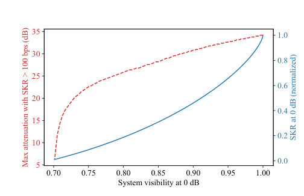
<figcaption class="paper-figure-caption"><b>Fig 2.</b> FIG. 1. Maximum attenuation achievable with a secret key rate (SKR) higher than 100 bps (red dashed line) and SKR at 0 dB nor- malized by the SKR achieved with a visibility of 1 (blue line) as a function of the system visibility at 0 dB.</figcaption>
</figure>
<figure class="paper-figure-card">
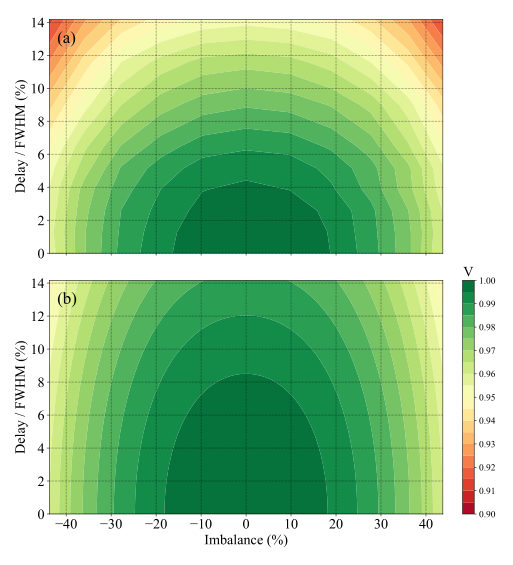
<figcaption class="paper-figure-caption"><b>Fig 3.</b> FIG. 3. (a) Experimental visibility contour plot as a function of im- balance and delay. (b) Analytically calculated visibility contour plot of an unchirped Gaussian laser pulse.</figcaption>
</figure>
<figure class="paper-figure-card">
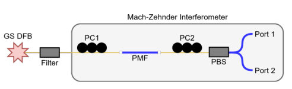
<figcaption class="paper-figure-caption"><b>Fig 4.</b> FIG. 4. Schematic of the PROUD measurement setup using a polar- ization Mach-Zehnder interferometer. GS DFB: gain-switched dis- tributed feedback laser. PC: polarization controller. PMF: polariza- tion maintaining fiber. PBS: polarizing beam splitter.</figcaption>
</figure>
<figure class="paper-figure-card">

<figcaption class="paper-figure-caption"><b>Fig 5.</b> FIG. 5. (a) Measured chirp (red dashed line) and intensity (black continuous line) of the optical source. (b) Comparison between the reconstructed spectrum (black dots) and measured spectrum (black continuous line) of the optical source.</figcaption>
</figure>
</div>

<p><strong>Summary.</strong> This paper analyzes the limitations imposed by optical imperfections—specifically laser chirp, interferometer delay, and imbalance—on time-bin BB84 QKD systems. By simulating and measuring visibility degradation, the authors quantify how these factors reduce the achievable Secret Key Rate. The work is important for developing robust quantum communication hardware by providing concrete metrics for required component stabilization.</p>
<p><strong>Why it may be interesting.</strong> This work is highly relevant as it bridges fundamental quantum optics characterization (chirp measurement) directly into the practical performance limits of a quantum communication protocol (QKD), which is crucial for building real-world quantum networks.</p>
<details>
<summary>Detailed structure</summary>
<p><strong>Main problem.</strong> The study investigates how imperfections like interferometer delay, imbalance, and laser chirp degrade the performance of a time-bin BB84 quantum key distribution (QKD) system.</p>
<p><strong>Main result.</strong> System visibility is highly sensitive to these parameters; specifically, laser chirp introduces significant degradation in the Secret Key Rate that must be accounted for beyond simple visibility loss calculations.</p>
<p><strong>Method.</strong> The authors combine simulations of QKD performance with experimental measurements using advanced techniques like PROUD (ultrafast optical differentiation) to characterize the chirp.</p>
<p><strong>Model / system.</strong> The physical system is a time-bin BB84 QKD protocol implemented using an imbalanced interferometer setup. The analysis models pulse propagation and interference visibility under varying delay, imbalance, and frequency chirp.</p>
<p><strong>Key observables.</strong> Secret Key Rate (SKR), Interference Visibility (V), Intensity Imbalance (U), and the Chirp parameter ($\Delta\omega$ or $eta$).</p>
<p><strong>Important parameters / regimes.</strong> System visibility ($V$), relative time delay ($ au$), intensity imbalance, and chirp coefficient ($eta$).</p>
<p><strong>Assumptions / limitations.</strong> The analysis assumes that linear chirp is the dominant source of phase variation; discrepancies between simulated unchirped results and experimental data are used to quantify the chirp effect.</p>
<p><strong>Figures summary.</strong> Figures illustrate SKR vs. visibility (Fig. 1), setup schematics for visibility measurement (Fig. 2) and chirp retrieval (Fig. 4), and contour plots showing visibility dependence on imbalance/delay (Fig. 3, Fig. 6).</p>
<p><strong>Paper structure.</strong> The paper progresses by first establishing the QKD performance metric (SKR vs. V), then measuring how delay and imbalance affect V, and finally introducing chirp analysis using PROUD to quantify an additional, significant degradation factor.</p>
</details>
<details>
<summary>Abstract</summary>
<p>We investigate the effect of interferometer delay and imbalance on the performance of a BB84 time-bin quantum key distribution system. We simulate the impact of interference visibility on system performance and measure the visibility of a pair of interferometers as a function of their relative time delay and intensity imbalance. In addition, our analysis highlights the effect of laser chirp on system performance.</p>
</details>
<p><sub><a href="#top">↑ back to top</a></sub></p>

<p><a id="paper-2607.01081"></a></p>
<h3 id="exact-dimer-ground-states-of-long-range-spin-chains-and-ladders"><a href="http://arxiv.org/abs/2607.01081v1">Exact dimer ground states of long-range spin chains and ladders</a></h3>
<p><strong>Authors:</strong> Jędrzej Wardyn, Miłosz Panfil<br>
<strong>Type:</strong> theory · <strong>Category:</strong> strongly correlated electrons · <strong>PDF:</strong> <a href="https://arxiv.org/pdf/2607.01081v1">https://arxiv.org/pdf/2607.01081v1</a><br>
<strong>Analysis basis:</strong> full PDF text, analyzed in chunks
<strong>Topic relevance:</strong> <code>analog quantum simulation</code> <strong>3/5</strong> · <code>entanglement &amp; information structure</code> <strong>2/5</strong> · <code>exotic spin models in light-matter</code> <strong>1/5</strong> · <code>non-equilibrium dynamics</code> <strong>1/5</strong></p>
<div class="figure-strip-hint">↔ Scroll figures horizontally</div>
<div class="paper-figures-scroll">
<figure class="paper-figure-card">
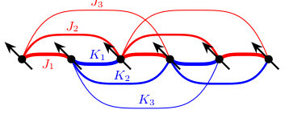
<figcaption class="paper-figure-caption"><b>Fig 1.</b> Figure 1: Diagram of a J1 −K1 −J2 −K2 −J3 −K3 chain given in (2). The Jn(Kn) interactions are drawn in red (blue) and the decreasing thickness signifies increase in distance n.</figcaption>
</figure>
<figure class="paper-figure-card">
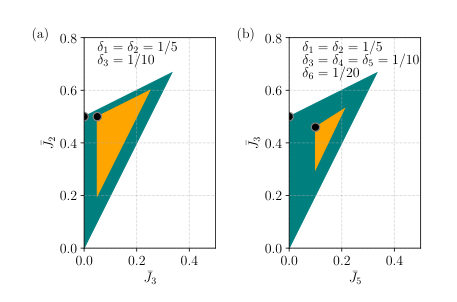
<figcaption class="paper-figure-caption"><b>Fig 2.</b> Figure 3: (a) The positivity polytope for J1–J2–J3 model: the teal region is for the spin chain (δn = 0) and the orange region for ladder with δk specified on the plot. The values are in the units of J1. The two black dots are the models with the exact dimer ground states. For the chain this is the Majumdar-Ghosh model. (b) The dimerization polytope for J1 −J5 model for chain (teal) and for ladder (yellow). The values of ¯J2 and ¯J4 are fixed by the condition (33).</figcaption>
</figure>
<figure class="paper-figure-card">
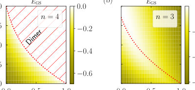
<figcaption class="paper-figure-caption"><b>Fig 3.</b> Figure 5: The ground state energy density of anisotropic LEM Hamiltonians in γy-γz plane normalised by γx. (a) For n = 4 and above the critical line, the anisotropic LEM is semi-positive definite, the ground state has zero energy, and is the dimer state. Below, the critical line the anisotropic LEM is not positive and the ground state is not anymore the exact dimer. (b) For n = 3 there is an approximate at small anisotropies dimer state we show nonexact dimer phase transition that happens below the red line, where we can see the highest scaled values of energy happen around the phase transition line. At γy/γz = 1 the model admits XXZ anisotropy, transitioning to an exact fully polarised...</figcaption>
</figure>
<figure class="paper-figure-card">
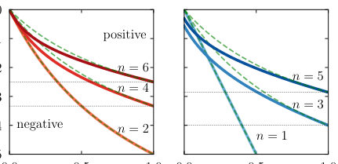
<figcaption class="paper-figure-caption"><b>Fig 4.</b> Figure 4: The critical lines for the positivity of the anisotropic Qγ operators for even (left panel) and odd (right panel ) ranges n of the couplings. The horizontal lines are the XXZ values of eq. (43). For n = 2 we have an analytical result shown as dashed green lines [40] which we compare to n &gt; 3 results from ED in (a) and (b).</figcaption>
</figure>
<figure class="paper-figure-card">
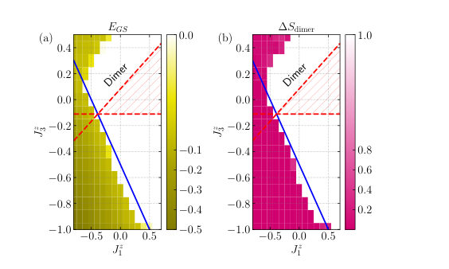
<figcaption class="paper-figure-caption"><b>Fig 5.</b> Figure 7: Phase diagram of J1 −J2 −J3 −J4 anisotropic chain shown by measurements of the ground state energy and dimer entropy done with ED for system of size L = 16 in OBC. The dimerization conditions predict the dimer phase in the hatched region bounded by dashed red lines. As in the isotropic case we see the conditions are not necessary as we find dimer phase in the whole white region. The blue line denotes phase transition to an exact FM phase.</figcaption>
</figure>
</div>

<p><strong>Summary.</strong> This paper rigorously determines the conditions under which exotic dimer states are guaranteed to be the ground state in generalized spin chains and ladders with long-range and anisotropic interactions. By combining theoretical semi-positivity arguments with numerical validation, it maps out precise phase boundaries that extend the known understanding of quantum magnetism.</p>
<p><strong>Why it may be interesting.</strong> This work provides rigorous mathematical criteria for identifying specific quantum phases (dimerized) in complex, interacting many-body systems, which is crucial for understanding magnetic materials where long-range correlations are important.</p>
<details>
<summary>Detailed structure</summary>
<p><strong>Main problem.</strong> The core problem is determining precise, explicit conditions on coupling constants for long-range interacting spin chains and ladders to guarantee that the exact dimer state is the ground state.</p>
<p><strong>Main result.</strong> The authors derive sufficient conditions (e.g., involving non-negativity of auxiliary coefficients $\alpha_n$ and $eta_n$) under which the dimer state is guaranteed to be the ground state, often extending beyond previously known necessary conditions.</p>
<p><strong>Method.</strong> The methodology combines theoretical derivation using semi-positivity arguments on the Hamiltonian ($ar{H} \ge 0$) with validation via exact diagonalization (ED) for finite systems and analysis of anisotropic quantum top models.</p>
<p><strong>Model / system.</strong> The study focuses on spin-1/2 interacting quantum spin chains and ladders, described by generalized Hamiltonians including long-range interactions ($J_n$ and $K_n$) and anisotropy terms ($\gamma_\mu^n$).</p>
<p><strong>Key observables.</strong> Ground state energy (EGS), Dimer entanglement entropy ($\Delta S_{	ext{dimer}}$), and the non-negativity of derived coefficients ($\alpha_n, eta_n$).</p>
<p><strong>Important parameters / regimes.</strong> Coupling constants $\{J_n\}, \{K_n\}$, anisotropy parameters $\{\gamma_\mu^n\}$, and system size $L$ (often assumed even).</p>
<p><strong>Assumptions / limitations.</strong> The analysis assumes the existence of a ground state characterized by semi-positivity, and some derivations rely on finite-size approximations or specific structural assumptions about coupling ranges.</p>
<p><strong>Figures summary.</strong> Figures illustrate phase diagrams showing boundaries between Dimer, Ferromagnetic (FM), and Partially Magnetized states for both isotropic and anisotropic chains/ladders, comparing theoretical predictions with ED results.</p>
<p><strong>Paper structure.</strong> The paper progresses from establishing general Hamiltonian forms to deriving necessary conditions via semi-positivity arguments ($\alpha_n \ge 0, eta_n \ge 0$). It then tackles the complexity of anisotropy by relating it to quantum top spectra and concludes by comparing theoretical sufficient conditions against numerical ED results on phase diagrams.</p>
</details>
<details>
<summary>Abstract</summary>
<p>Interacting spin chains and ladders are known to support a plethora of quantum phases with complex ground-state phase diagrams. In this work, we study a large family of such models and determine precise, explicit conditions under which an exact dimer state is guaranteed to be the ground state. These general conditions are validated for various generalizations of the Majumdar-Ghosh model using exact diagonalization. Our results provide exact reference points in the phase diagrams of a wide class of spin chains and ladders, including those with anisotropic and arbitrary-range interactions.</p>
</details>
<p><sub><a href="#top">↑ back to top</a></sub></p>

<p><a id="paper-2607.01187"></a></p>
<h3 id="exploiting-symmetry-in-quantum-reservoir-computing"><a href="http://arxiv.org/abs/2607.01187v1">Exploiting Symmetry in Quantum Reservoir Computing</a></h3>
<p><strong>Authors:</strong> Markus Baumann, Michael Poppel, Thomas Gabor, Maximilian Zorn, Claudia Linnhoff-Popien, Jonas Stein<br>
<strong>Type:</strong> both · <strong>Category:</strong> quantum information and computing · <strong>PDF:</strong> <a href="https://arxiv.org/pdf/2607.01187v1">https://arxiv.org/pdf/2607.01187v1</a><br>
<strong>Analysis basis:</strong> full PDF text, analyzed in chunks
<strong>Topic relevance:</strong> <code>measurement-induced transitions</code> <strong>3/5</strong> · <code>quantum measurements</code> <strong>2/5</strong> · <code>methods for driven-dissipative</code> <strong>1/5</strong> · <code>non-equilibrium dynamics</code> <strong>1/5</strong></p>
<div class="figure-strip-hint">↔ Scroll figures horizontally</div>
<div class="paper-figures-scroll">
<figure class="paper-figure-card">
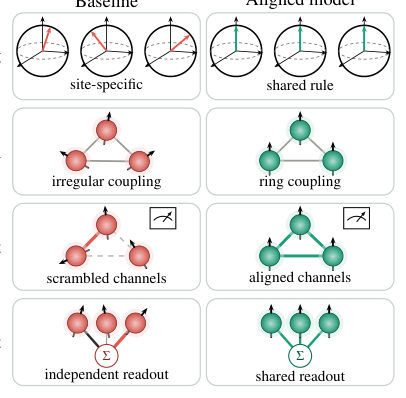
<figcaption class="paper-figure-caption"><b>Fig 1.</b> Fig. 1. Compact symmetry-placement pipeline. The baseline breaks the cyclic action across encoding, coupling, measurement, and readout; the aligned model keeps it through all four interfaces.</figcaption>
</figure>
<figure class="paper-figure-card">
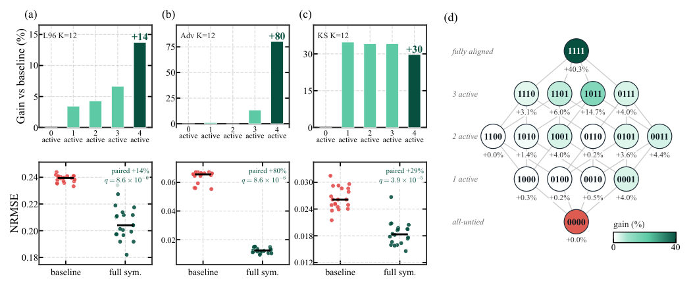
<figcaption class="paper-figure-caption"><b>Fig 2.</b> Fig. 2. Fixed-budget digital E/H/O/R audit. All configurations use the same 61 features per site, so differences come from symmetry placement rather than from a larger measurement budget. Panels (a)–(c) show representative Lorenz–96, advection, and Kuramoto–Sivashinsky settings: the bars summarize the best gain obtained when 0, 1, 2, 3, or all 4 interfaces are aligned, and the lower plots compare the all-untied baseline with the fully aligned model in paired test NRMSE. Panel (d) shows the full 16-configuration E/H/O/R lattice. Each node is one switch setting, and darker color means larger mean gain over the all-untied baseline. Aligning all four interfaces (E+H+O+R) gives the largest mean...</figcaption>
</figure>
<figure class="paper-figure-card">

<figcaption class="paper-figure-caption"><b>Fig 3.</b> Fig. 3. Diagnostic K = 6 forecast/error zooms, not included in the main K ∈{8, 10, 12} aggregate: advection (a) and Lorenz–96 (b). NRMSE is computed on the full diagnostic traces. Sym-QRC denotes the fully aligned 1111 model; QRC denotes the all-untied 0000 baseline.</figcaption>
</figure>
<figure class="paper-figure-card">

<figcaption class="paper-figure-caption"><b>Fig 4.</b> Fig. 4. Equal-budget measurement control. E, H, and R are fixed active, so only the measurement assignment changes. Panel (a) shows that the 61-feature orbit-aligned map outperforms scrambled and random 61-feature maps. Panel (b) varies the feature budget from 4 to 61 features per site; each curve is one task/ring-size setting, showing that orbit alignment helps already at small budgets and usually improves as more channels are measured.</figcaption>
</figure>
</div>

<p><strong>Summary.</strong> This paper establishes that exploiting symmetry in Quantum Reservoir Computing (QRC) requires enforcing consistency across all computational interfaces: encoding, dynamics, measurement, and readout. By developing 'observable-orbit completion,' the authors demonstrate that aligning these four components yields significant performance boosts over models where symmetry is broken at any single point.</p>
<p><strong>Why it may be interesting.</strong> This work provides a rigorous architectural guide for designing quantum machine learning models, showing that the physical implementation details—especially measurement design—are as critical as the underlying Hamiltonian dynamics for extracting useful information.</p>
<details>
<summary>Detailed structure</summary>
<p><strong>Main problem.</strong> The core challenge is ensuring that symmetry present in time-series data (like cyclic patterns) is preserved and visible throughout the entire Quantum Reservoir Computing pipeline, as mere symmetry in one component is insufficient.</p>
<p><strong>Main result.</strong> Achieving strong predictive gains requires aligning symmetry constraints across all four interfaces: input encoding, reservoir dynamics, measurement observables, and classical readout. This alignment mechanism proves crucial for successful data-driven quantum modeling.</p>
<p><strong>Method.</strong> The authors employ a systematic 'four-interface audit' comparing fully aligned models against baseline configurations to quantify the necessity of symmetry preservation at every stage, particularly focusing on observable-orbit completion in measurements.</p>
<p><strong>Model / system.</strong> The model is Quantum Reservoir Computing (QRC) applied to cyclic forecasting tasks on periodic rings. The dynamics involve mapping inputs through fixed quantum evolution and measuring expectation values before training a classical readout layer.</p>
<p><strong>Key observables.</strong> Normalized Root Mean Square Error (NRMSE), percentage gain in forecasting accuracy, and the measured feature map $\Phi_M(x)$ restricted to the span of measured observables.</p>
<p><strong>Important parameters / regimes.</strong> The number of sites on the ring ($K$), fixed feature budget (e.g., 61 features/site), and the specific symmetry group action ($\mathbb{Z}_K$).</p>
<p><strong>Assumptions / limitations.</strong> A critical limitation is the 'measured-span obstruction': if a symmetry-carrying channel is not explicitly measured, it cannot be recovered by the classical optimization process.</p>
<p><strong>Figures summary.</strong> Figures illustrate performance gains comparing baseline vs. fully aligned models across various tasks (e.g., Advection, L96), and tables detail the systematic audit results for the E/H/O/R switches.</p>
<p><strong>Paper structure.</strong> The paper systematically develops the necessity of symmetry alignment by first defining the QRC framework, then introducing observable-orbit completion to enforce measurement symmetry, followed by a comprehensive factorial audit across all four interfaces (E, H, O, R), and finally validating these findings on diverse tasks including real weather data.</p>
</details>
<details>
<summary>Abstract</summary>
<p>Symmetry is a powerful inductive bias, but in quantum reservoir computing (QRC) it cannot be imposed only by making the reservoir symmetric. QRC maps inputs through fixed quantum dynamics into nonlinear expectation-value features and trains only a classical readout, so the relevant symmetry must be visible in the measured feature map. We study cyclic forecasting tasks, such as sensors around a turbine or weather stations along a latitude circle, where the same local pattern should be forecast by the same rule wherever it appears on the ring. Thus, rotating the input by one site should rotate, not change, the predicted field. We show that a symmetric Hamiltonian is not enough: even large Pauli measurement sets can fail if their channels do not match the data symmetry, since optimization cannot recover channels that were never measured. We address this through observable-orbit completion, which measures symmetry-related observable channels and aligns encoding, dynamics, measurement, and readout. The strongest gains arise from aligning all four interfaces together, with matched spin-ring, real-weather, and IBM hardware checks supporting the same measured-span mechanism.</p>
</details>
<p><sub><a href="#top">↑ back to top</a></sub></p>

<p><a id="paper-2607.00106"></a></p>
<h3 id="monte-carlo-reconstruction-of-symmetry-twisted-partition-function-ratios-the-critical-3d-ising"><a href="http://arxiv.org/abs/2607.00106v1">Monte Carlo reconstruction of symmetry-twisted partition function ratios: the critical 3D Ising</a></h3>
<p><strong>Authors:</strong> José Matos<br>
<strong>Type:</strong> theory · <strong>Category:</strong> statistical mechanics · <strong>PDF:</strong> <a href="https://arxiv.org/pdf/2607.00106v1">https://arxiv.org/pdf/2607.00106v1</a><br>
<strong>Analysis basis:</strong> full PDF text, analyzed in chunks
<strong>Topic relevance:</strong> <code>methods for driven-dissipative</code> <strong>3/5</strong> · <code>Keldysh / 2PI / non-Gaussian methods</code> <strong>1/5</strong> · <code>driven-dissipative phase transition</code> <strong>1/5</strong> · <code>non-equilibrium dynamics</code> <strong>1/5</strong> · <code>non-equilibrium universality</code> <strong>1/5</strong></p>
<div class="figure-strip-hint">↔ Scroll figures horizontally</div>
<div class="paper-figures-scroll">
<figure class="paper-figure-card">
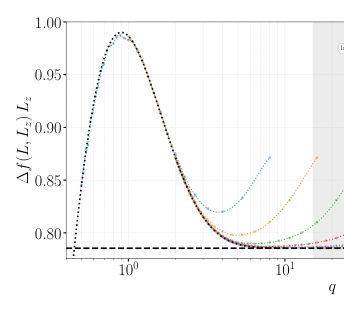
<figcaption class="paper-figure-caption"><b>Fig 1.</b> Figure 1. Two-dimensional benchmark of the flat histogram estimator. The dimensionless differ- ence Lz∆fZ2(L, Lz) is plotted against q = L/Lz for several transverse sizes L. The dashed line is the conformal result Lz∆fZ2 →π/4 at q, Lz →∞. The black dotted curve is the exact Ising torus result from the Jacobi-theta representation of the Virasoro characters [23]. Dashed curves are cubic interpolations in q at fixed L. The gray band marks the large-q window used below, to study finite-L effects. The deviations at small Lz/large-q are the lattice and finite-volume corrections discussed in the text.</figcaption>
</figure>
<figure class="paper-figure-card">
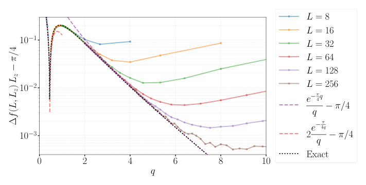
<figcaption class="paper-figure-caption"><b>Fig 2.</b> Figure 2. Finite-q corrections in the two-dimensional benchmark. The plot shows Lz∆fZ2(L, Lz)− π/4 versus q = L/Lz. The dashed curves are the leading large-q and small-q exponential approxi- mations. The exponential regime is visible only after the small-Lz lattice corrections are controlled.</figcaption>
</figure>
<figure class="paper-figure-card">
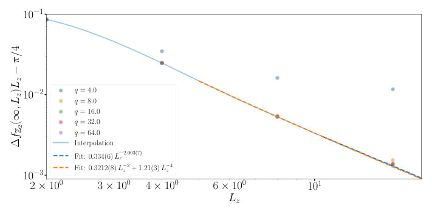
<figcaption class="paper-figure-caption"><b>Fig 3.</b> Figure 3. Large-q extrapolation at fixed Lz. For each q ∈[16, 100], the interpolation is evaluated and plotted versus Lz, as a single data set. This range makes exponential finite-q corrections negligible, as indicated by fig. 2. Raw data at aspect ratios with at least four values of Lz are also shown. The convergence from q = 4 to q = 8 and the stability at q ≳16 indicate that the interpolation is in the asymptotic regime.</figcaption>
</figure>
<figure class="paper-figure-card">

<figcaption class="paper-figure-caption"><b>Fig 4.</b> Figure 4. Raw finite-volume data for the three-dimensional slab at β = βc = 0.221654626(5). The plot shows Y (L, Lz) = L2 z∆fZ2(L, Lz) versus q = L/Lz for several transverse sizes L. Dashed curves are cubic interpolations in q at fixed L. The dashed black line is the infinite volume extrapolation. The gray band marks the large-q window used for the fixed-Lz diagnostic in fig. 5. Unlike the two dimensional case, there is no clear plateau.</figcaption>
</figure>
<figure class="paper-figure-card">
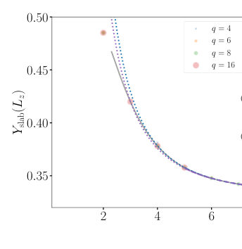
<figcaption class="paper-figure-caption"><b>Fig 5.</b> Figure 5. Large-q evaluation of the three-dimensional slab data at fixed Lz. For each Lz, the interpolation is evaluated at q = L/Lz ∈[8, 16], where finite-q corrections are not visible within the statistical precision. The values are plotted versus Lz and show the finite-Lz approach to the slab Casimir amplitude. Raw data at fixed aspect ratios with several Lz values are also shown. A free power-law fit gives an effective exponent near 2.5; the second fit includes terms proportional to L−(∆T ′−3) z , L−(∆ϵ′−3) z , and L−2 z . The uncertainties quoted in the fit labels are formal errors from the fit covariance matrix only; they do not include correlations, interpolation effects, or the...</figcaption>
</figure>
</div>

<p><strong>Summary.</strong> This work develops a powerful Monte Carlo technique to calculate free energy differences between distinct global sectors of lattice models. Applied to the 3D Ising model, it yields precise values for symmetry-twisted Casimir effects and spectral gaps by analyzing finite-size corrections in various geometric limits.</p>
<p><strong>Why it may be interesting.</strong> While focused on classical statistical mechanics, the methodology of using complex sampling techniques (like flat histograms) to extract subtle spectral information (gaps, boundary effects) is highly relevant to modern quantum many-body simulations where direct measurement of ground state properties is difficult.</p>
<details>
<summary>Detailed structure</summary>
<p><strong>Main problem.</strong> The primary goal is to estimate partition function ratios between distinct global sectors of a lattice theory, specifically for the critical 3D Ising model.</p>
<p><strong>Main result.</strong> The method successfully yields the symmetry-twisted thermodynamic Casimir difference $\Delta Z_2 = 0.327(2)$ and estimates the $Z_2$-odd energy gap $\kappa_{\sigma} = 1.230(3)$.</p>
<p><strong>Method.</strong> It employs a Monte Carlo strategy using an enlarged configuration space to sample an interpolating family of lattice systems, allowing for direct reconstruction of free energy differences via flat histogram methods.</p>
<p><strong>Model / system.</strong> The system studied is the three-dimensional Ising model simulated on a slab geometry ($R^2 	imes S^1_{L_z}$) at its bulk critical point. The analysis compares the untwisted (periodic) sector with the $\mathbb{Z}_2$-twisted (antiperiodic) sector.</p>
<p><strong>Key observables.</strong> Sector free energy difference ($\Delta F_{\mathbb{Z}_2}$), symmetry-twisted thermodynamic Casimir difference ($\Delta Z_2$), and spectral gap estimates ($\kappa_\sigma$).</p>
<p><strong>Important parameters / regimes.</strong> The analysis involves extrapolations in the large-$q$ limit ($q=L/L_z 	o \infty$) and the small-$q$ limit ($q \ll 1$), as well as finite-size scaling parameters.</p>
<p><strong>Assumptions / limitations.</strong> The method assumes the existence of a suitable interpolating family for sampling and relies on extrapolations to infinite volume and specific limits (e.g., $q	o\infty$).</p>
<p><strong>Figures summary.</strong> Figures illustrate large-$q$ evaluations of slab data versus $L_z$, showing convergence towards $\Delta Z_2$, and stability checks for both the Casimir difference and the gap exponent $\kappa_\sigma$.</p>
<p><strong>Paper structure.</strong> The paper details the general Monte Carlo framework using an enlarged configuration space, applies it to the 3D Ising model on a slab geometry, performs finite-size scaling analysis by extrapolating results in both large-$q$ and small-$q$ regimes, and concludes with universal values for sector differences.</p>
</details>
<details>
<summary>Abstract</summary>
<p>We introduce a Monte Carlo strategy for directly estimating partition function ratios between distinct global sectors of a lattice theory. It enlarges the configuration space to sample an interpolating family whose endpoints are the desired sectors, and uses flat histogram methods to reconstruct the corresponding free energy difference. Although the construction is more general, we focus here on the three-dimensional Ising model on the slab $\mathbb{R}^{2}\times S^{1}_{L_{z}}$ at the bulk critical point, comparing the untwisted periodic sector with the $\mathbb{Z}_{2}$-twisted antiperiodic sector. A large-volume and aspect ratio extrapolation gives the symmetry-twisted thermodynamic Casimir difference $Δ_{\mathbb{Z}_{2}}=0.327(2)$ directly, without lattice derivatives or bulk subtractions. This provides an independent twisted sector probe of tensions observed in periodic sector thermodynamic Casimir observables. More generally, the method gives direct but selective numerical access to CFT compactification data, including estimates of the effective thermal screening scale and the $\mathbb{Z}_{2}$-odd sector energy gap on $T^{2}$.</p>
</details>
<p><sub><a href="#top">↑ back to top</a></sub></p>

<p><a id="paper-2607.00100"></a></p>
<h3 id="velocity-of-a-quantum-particle-in-a-classically-forbidden-region"><a href="http://arxiv.org/abs/2607.00100v1">Velocity of a Quantum Particle in a Classically Forbidden Region</a></h3>
<p><strong>Authors:</strong> Christian Beck, Sheldon Goldstein, Dustin Lazarovici, Roderich Tumulka, Nino Zanghi<br>
<strong>Type:</strong> theory · <strong>Category:</strong> other · <strong>PDF:</strong> <a href="https://arxiv.org/pdf/2607.00100v1">https://arxiv.org/pdf/2607.00100v1</a><br>
<strong>Analysis basis:</strong> full PDF text, analyzed in chunks
<strong>Topic relevance:</strong> <code>quantum measurements</code> <strong>3/5</strong> · <code>measurement-induced transitions</code> <strong>2/5</strong> · <code>methods for driven-dissipative</code> <strong>1/5</strong> · <code>non-equilibrium dynamics</code> <strong>1/5</strong></p>
<div class="figure-strip-hint">↔ Scroll figures horizontally</div>
<div class="paper-figures-scroll">
<figure class="paper-figure-card">
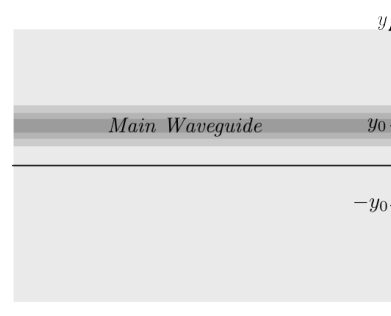
<figcaption class="paper-figure-caption"><b>Fig 1.</b> Figure 1: Illustration of the potential landscape underlying the experimental setup (dark: low, light: high). The main waveguide at y = y0 extends throughout; for x ≥0 the transverse potential becomes a double-well, side- coupling the main waveguide to a parallel auxiliary waveguide at y = −y0. At x = 0, there is a potential step, acting as a barrier for the particle incident from the main waveguide. An explicit form is given in (2) below.</figcaption>
</figure>
<figure class="paper-figure-card">
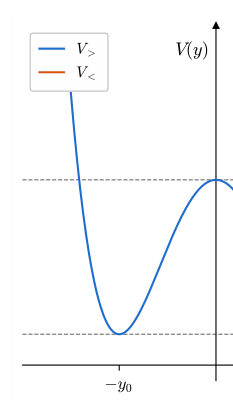
<figcaption class="paper-figure-caption"><b>Fig 2.</b> Figure 2: Potentials V&lt; and V&gt; as in (2)</figcaption>
</figure>
<figure class="paper-figure-card">

<figcaption class="paper-figure-caption"><b>Fig 3.</b> Figure 3: Relative population ρa in the auxiliary waveguide as a function of longitudinal distance from the step in units of |δk|−1. In the propagative regime (blue curve), the populations oscillate between the two waveguides, with complete transfer (ρa = 1) at odd multiples of π/(2δk). In the evanes- cent regime (orange curve, as given by (29)), the populations equilibrate monotonically, approaching ρa = 1/2 over the characteristic length scale Xeq ∼1/δκ.</figcaption>
</figure>
<figure class="paper-figure-card">
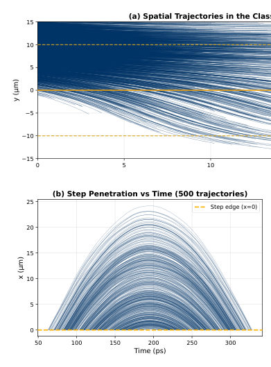
<figcaption class="paper-figure-caption"><b>Fig 4.</b> Figure 4: Numerical simulation of Bohmian trajectories in the classi- cally forbidden region (x &gt; 0) of the 2D setup for V0 = 0.54 meV, ℏJ0 = 26.2 µeV, Ek0 −V0 = −0.07 meV, σk = 2.5 × 10−3 µm−1. (a) Spatial paths of 5,000 trajectories sampled from |Ψ|2. Main waveguide centered around y0 = 10 µm; auxiliary waveguide centered around −y0 = −10 µm. (b) Longitudinal coordinate X(t) for 500 representative trajectories, exhibiting parabolic turnaround. Horizontal axis centered around median reversal time. (c) Transverse coordinate Y (t) for 292 trajectories that crossed y = 0 prior to turnaround; the simultaneous reversal of X(t) and Y (t) reflects the time- reversal symmetry (66).</figcaption>
</figure>
<figure class="paper-figure-card">

<figcaption class="paper-figure-caption"><b>Fig 5.</b> Figure 5: Distribution of tunneling times for Bohmian trajectories migrating from the main into the auxiliary waveguide of the 2D setup. Here, “tunneling time” is defined as the time the Bohmian particle takes from entering the classically forbidden region at x = 0 (in the main waveguide, y &gt; 0) until entering the auxiliary waveguide, y &lt; 0. Top: Propagative regime (Ek0 − V0 = +0.15 meV). Bottom: Evanescent regime (Ek0 −V0 = −0.07 meV). σk = 2.5×10−3 µm−1 for both. Time is shown in units of π/(2J0). The orange curve shows for comparison the distribution of the first time of crossing from y &gt; 0 to y &lt; 0, p(τ) ≈(π/2) sin(πτ), in the 1D double well model (8) with initial state ϕm.</figcaption>
</figure>
</div>

<p><strong>Summary.</strong> This theoretical work resolves a conflict regarding the measured speed of a quantum particle tunneling through a barrier, where experimental estimates disagreed with Bohmian predictions. The authors show that naive time estimates fail because they ignore entanglement between degrees of freedom. By correctly applying and conditioning the dwell-time formula, they demonstrate perfect agreement with Bohmian mechanics.</p>
<p><strong>Why it may be interesting.</strong> It provides deep insight into the interpretation of quantum measurements in non-trivial regimes (like tunneling) and rigorously tests the equivalence between different formalisms (QM vs. Bohmian mechanics) under specific physical constraints.</p>
<details>
<summary>Detailed structure</summary>
<p><strong>Main problem.</strong> The paper resolves discrepancies between particle speed estimates in classically forbidden regions (tunneling) derived from experiments/heuristics and predictions made by Bohmian mechanics.</p>
<p><strong>Main result.</strong> A correct application of the dwell time formula, conditioned on penetration into the barrier, yields results that exactly agree with Bohmian mechanical predictions for the average velocity.</p>
<p><strong>Method.</strong> The analysis compares three methods—tunneling time estimate, Büttiker dwell time formula, and Bohmian trajectory calculation—by analyzing time-dependent wave packets in 1D and 2D coupled waveguide models.</p>
<p><strong>Model / system.</strong> The system is a non-relativistic quantum particle modeled by the Schrödinger equation in a potential landscape featuring a potential step realized via coupled waveguides (a double-well structure). The analysis covers both propagating and evanescent regimes.</p>
<p><strong>Key observables.</strong> Particle populations ($|\Psi|^2$), Bohmian velocities, average speeds ($ar{v}_B$), and conditional dwell times ($   au_{pen}$).</p>
<p><strong>Important parameters / regimes.</strong> Evanescent decay constants ($\delta_\kappa, ar{\kappa}$), energy splitting ($J_0$), spectral width ($\sigma_k$), and characteristic equilibration length scales ($X_{eq}$).</p>
<p><strong>Assumptions / limitations.</strong> The initial discrepancy arose from assuming the tunneling time is set only by transverse coupling (ignoring longitudinal entanglement) or applying the standard Büttiker formula without conditioning on barrier penetration.</p>
<p><strong>Figures summary.</strong> Figures illustrate potential landscapes, relative population dynamics in both oscillatory (propagative) and monotonic (evanescent) regimes, and numerical simulations comparing $|\Psi|^2$ density with Bohmian trajectories.</p>
<p><strong>Paper structure.</strong> The paper progresses by first identifying the experimental challenge, then analyzing the theoretical estimates (tunneling time/dwell time), demonstrating where these estimates fail due to entanglement effects in the evanescent regime, and finally resolving the conflict by applying a corrected, conditional dwell-time argument that matches Bohmian predictions.</p>
</details>
<details>
<summary>Abstract</summary>
<p>Recently, Sharoglazova et al. [Nature 643, 67 (2025)] proposed a procedure for determining the speed of a quantum particle in the classically forbidden region of a potential step, and implemented it in a beautiful experiment. The inferred speeds disagree significantly with the Bohmian velocities, which the authors presented as an experimental challenge to Bohmian mechanics. This is puzzling because the speeds are inferred from particle populations in coupled waveguides for which Bohmian mechanics and standard quantum mechanics make identical predictions. We resolve the puzzle by a detailed theoretical analysis of the experimental setup. We show that the speed inference rests on an assumption that fails in the relevant (evanescent) regime according to both Bohmian mechanics and standard quantum mechanics -- namely that the inter-waveguide tunneling time is set by the transverse coupling and is not affected by entanglement with the longitudinal degree of freedom. We also consider a second speed estimate suggested by Sharoglazova et al., which is based on the Büttiker dwell time formula for particles in the forbidden region. We show that the authors applied the formula incorrectly, and that a correct application yields exact agreement with the predictions of Bohmian mechanics. Our analysis includes explicit calculations of Bohmian trajectories, dwell times, and longitudinal speeds in the two-dimensional waveguide model of the experiment.</p>
</details>
<p><sub><a href="#top">↑ back to top</a></sub></p>

<p><a id="paper-2607.00762"></a></p>
<h3 id="deconfined-criticality-between-an-antiferromagnetic-insulator-and-a-nodal-d-wave-superconductor-a-quantum-monte-carlo-study"><a href="http://arxiv.org/abs/2607.00762v1">Deconfined criticality between an antiferromagnetic insulator and a nodal d-wave superconductor: a quantum Monte Carlo study</a></h3>
<p><strong>Authors:</strong> Chuang Chen, Subir Sachdev, Zi Yang Meng<br>
<strong>Type:</strong> theory · <strong>Category:</strong> strongly correlated electrons · <strong>PDF:</strong> <a href="https://arxiv.org/pdf/2607.00762v1">https://arxiv.org/pdf/2607.00762v1</a><br>
<strong>Analysis basis:</strong> full PDF text, analyzed in chunks
<strong>Topic relevance:</strong> <code>analog quantum simulation</code> <strong>3/5</strong> · <code>Keldysh / 2PI / non-Gaussian methods</code> <strong>1/5</strong> · <code>driven-dissipative phase transition</code> <strong>1/5</strong> · <code>exotic spin models in light-matter</code> <strong>1/5</strong></p>
<div class="figure-strip-hint">↔ Scroll figures horizontally</div>
<div class="paper-figures-scroll">
<figure class="paper-figure-card">
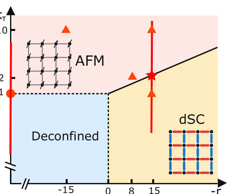
<figcaption class="paper-figure-caption"><b>Fig 1.</b> Fig. 1. Phase diagram obtained from QMC simulation. The x-axis is −r and y-axis is κτ . There are three phases namely d-wave superconductor (dSC), anti- ferromagnetic Mott insulator (AFM) and deconfined phase of the SU(2) gauge field (deconfined). The insets schematically illustrate the staggered spin configuration of the AFM phase and the opposite pairing signs on the horizontal and vertical bonds of the dSC phase. The dots (star and circle) on the phase boundaries are determined from our parameter scans in the phase diagram as the transition point (Fig. 2 and Fig. 3). The four triangular dots mark the parameters of the spectral study (Fig. 4).</figcaption>
</figure>
<figure class="paper-figure-card">

<figcaption class="paper-figure-caption"><b>Fig 2.</b> Fig. 2. AFM structure factor and correlation ratio across Deconfined-to-AFM transition. (a) The structure factor of the AFM phase χS is measured at the AFM ordered wave vector q = M as a function of κτ . Here we fix J = 1 as the energy unit and κ = 20 and the simulations are performed with linear system sizes L = 4, 8, 12, 16 and inverse temperature β = 2L. As κτ increases, the AFM order also becomes clearer. (b) The correlation ratio of the AFM phase rAFM as a function of κτ . The crossing of the correlation ratio indicates the position of quantum critical point between the phase with deconfined SU(2) gauge field and π-flux spinon and confined AFM phase.</figcaption>
</figure>
<figure class="paper-figure-card">

<figcaption class="paper-figure-caption"><b>Fig 3.</b> Fig. 3. Structure factors and correlation ratio of dSC, AFM and VBS orders across dSC-to-AFM transition. We set κ = 20, m = 0.1, g = 0.54/c0, V1 = 4/c0 −3c0, K1 = 3c0, J1 = 3c0 in Eq. (7) and perform the QMC simulations along the path of r = −15 and varying κτ (the right red scan in Fig. 1), with linear system sizes L = 4, 8, 12, 16 and inverse temperature β = 2L. (a) The structure factor of the dSC phase χel, d as a function of κτ . As κτ increases, dSC order decreases and vanishes. (b) The structure factor of the AFM phase χS. As κτ increases, AFM order starts to increase at the point where dSC order starts to decrease. (c) The structure factor of VBS χD. As κτ increases, the VBS order...</figcaption>
</figure>
<figure class="paper-figure-card">
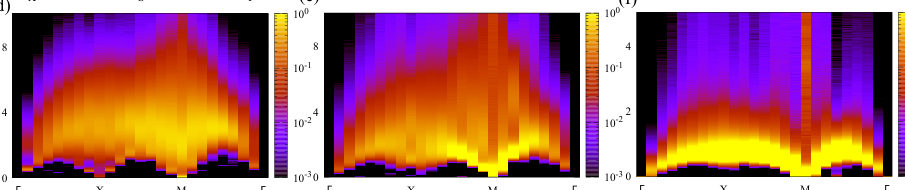
<figcaption class="paper-figure-caption"><b>Fig 4.</b> Fig. 4. Electron and spin spectra across dSC-to-AFM transition. (a) shows the electron spectra A(k, ω) inside the dSC phase with r = −15, κτ = 1, while (b) r = −8, κτ = 2 and (c) r = 15, κτ = 10 are electron spectra inside the AFM phase, with (b) closer to the transition point. (d), (e) and (f) are the corresponding spin spectra χS(q, ω). For electron spectra A(k, ω), we plot the high symmetry path connecting X(π, 0) →S(π/2, π/2) →Y(0, π). While for the spin spectra, we use path Γ(0, 0) →X(π, 0) →M(π, π) →Γ(0, 0). In the dSC phase, the electron shows Dirac-like dispersion, and the spin spectrum is in the shape of two-spinon continuum of U(1) Dirac spin liquid. In the AFM phase, however,...</figcaption>
</figure>
</div>

<p><strong>Summary.</strong> This work uses Quantum Monte Carlo simulations on a fractionalized model to study the transition between an antiferromagnetic insulator and a d-wave superconductor. The key finding is evidence for a second-order deconfined quantum phase transition (DQCP) at which both magnetic and superconducting orders vanish continuously. This provides theoretical support for understanding competing orders in strongly correlated electron systems.</p>
<p><strong>Why it may be interesting.</strong> While focused on condensed matter, the use of lattice gauge theory coupled to fermionic excitations and the explicit study of quantum critical points provide rich theoretical tools applicable to strongly interacting many-body systems relevant in AMO physics.</p>
<details>
<summary>Detailed structure</summary>
<p><strong>Main problem.</strong> The study investigates the quantum phase transition between an antiferromagnetic (Néel) insulator and a nodal d-wave superconductor in a lattice model.</p>
<p><strong>Main result.</strong> Evidence is found for a second-order deconfined quantum phase transition (DQCP) where both Néel order and d-wave superconductivity orders vanish continuously.</p>
<p><strong>Method.</strong> Quantum Monte Carlo (QMC) simulations are employed on a fractionalized representation of the electron using spinon and chargon fields to avoid the sign problem.</p>
<p><strong>Model / system.</strong> The system is modeled on a square lattice at half-filling, described by an SU(2) lattice gauge theory coupled to fermionic spinons and bosonic chargons. This setup mimics aspects of high-temperature superconductivity in cuprates.</p>
<p><strong>Key observables.</strong> Electron spectral function $A(\mathbf{k}, \omega)$, dynamical spin structure factor $\chi_S(\mathbf{q}, \omega)$, and correlation ratios for dSC, AFM, and VBS orders.</p>
<p><strong>Important parameters / regimes.</strong> The transition is tuned by parameters like $\kappa$ and $\kappa_	au$, which control the gauge field dynamics and coupling strengths.</p>
<p><strong>Assumptions / limitations.</strong> The analysis is restricted to the half-filled, particle-hole symmetric case to ensure the QMC simulation remains sign-problem free.</p>
<p><strong>Figures summary.</strong> Figures illustrate phase diagrams mapping out dSC, AFM, and deconfined regimes, alongside spectral functions showing Dirac dispersion in the superconducting phase that gaps into a gapped spectrum in the antiferromagnetic phase near the transition point.</p>
<p><strong>Paper structure.</strong> The paper develops the fractionalized Hamiltonian using spinon/chargon fields, details the QMC simulation techniques (including gauge field updates), and then analyzes key observables like spectral functions and structure factors across different parameter regimes to pinpoint the DQCP.</p>
</details>
<details>
<summary>Abstract</summary>
<p>We present a quantum Monte Carlo study of the transition between the insulating Néel state and the nodal $d$-wave superconductor on the square lattice at half-filling. We access a regime of frustrated magnetic order without a sign problem using a parton representation of the electron in terms of fermionic spinons and bosonic chargons. Both partons move in a background $π$-flux (so the electron experiences no net flux) and are coupled to a quantum fluctuating SU(2) lattice gauge field. In contrast to earlier studies directly on the electronic degrees of freedom, we find evidence for a second-order deconfined quantum phase transition at which both the Néel and $d$-wave superconductivity orders vanish continuously. We compute correlators of the spinon-chargon composite with the same quantum numbers as the electron: we find a gapless Dirac dispersion inside the $d$-wave superconductor, turning into a gapped dispersion in the antiferromagnet.</p>
</details>
<p><sub><a href="#top">↑ back to top</a></sub></p>

<p><a id="paper-2607.00688"></a></p>
<h3 id="leakage-mobility-and-passive-leakage-removal-in-transmons-with-tunable-couplers"><a href="http://arxiv.org/abs/2607.00688v1">Leakage Mobility and Passive Leakage Removal in Transmons with Tunable Couplers</a></h3>
<p><strong>Authors:</strong> Taneli Tolppanen, Gonzalo Martín-Vázquez, Sasu Tuohino, Matti Silveri<br>
<strong>Type:</strong> theory · <strong>Category:</strong> quantum information and computing · <strong>PDF:</strong> <a href="https://arxiv.org/pdf/2607.00688v1">https://arxiv.org/pdf/2607.00688v1</a><br>
<strong>Analysis basis:</strong> full PDF text, analyzed in chunks
<strong>Topic relevance:</strong> <code>methods for driven-dissipative</code> <strong>3/5</strong> · <code>Keldysh / 2PI / non-Gaussian methods</code> <strong>1/5</strong> · <code>correlated / nonlocal dissipation</code> <strong>1/5</strong> · <code>driven-dissipative phase transition</code> <strong>1/5</strong></p>
<div class="figure-strip-hint">↔ Scroll figures horizontally</div>
<div class="paper-figures-scroll">
<figure class="paper-figure-card">

<figcaption class="paper-figure-caption"><b>Fig 1.</b> FIG. 1. Schematics of the coupled transmon systems: Two transmons and one coupler (a)-(c), and an array of coupled transmons (d)-(f). (a), (d) Connectivity map showing the coupling configurations between the transmons Qj and the mediating tunable couplers Cj. (b), (e) Anharmonic multi- level frequency spectra for the transmons and couplers. The green dashed lines indicate the reference frequencies used to define the localized detunings, given by ∆jc = ωj −ωc &gt; 0 for j = 1, 2 in panel (b), and ∆c = ω2 −ωcj &gt; 0 for j = 1, 2 alongside ∆q = ω2 −ωj for j = 1, 3 in panel (e). (c), (f) Con- ceptual illustration on the dynamics of leakage excitations (red circles) between the edge transmons (blue...</figcaption>
</figure>
<figure class="paper-figure-card">

<figcaption class="paper-figure-caption"><b>Fig 2.</b> FIG. 2. (a) Coupler detunings ∆1c = ω1 −ωc where the excitation exchange geff or the ZZ interaction is eliminated, geff = 0 and ζ = 0 as a function of the two transmon detuning ∆12 = ω1 −ω2. (b) Effective coupling strengths for different coupler detuning ∆1c: excitation exchange geff for |10⟩↔|01⟩, leakage exchange J20 for |20⟩↔|02⟩and J21 for |21⟩↔|12⟩, and ZZ coupling ζ. (c) Effective leakage tunneling strengths J201 for |201⟩↔|102⟩and J211 for |211⟩↔|112⟩, when the two edge transmons are detuned from the middle transmon by ∆q and the couplers are tuned so that ζ = 0. In panel (a) the second transmon is tuned to ω2/2π = 4000 MHz, in panel (b) the two transmons are resonant ω1/2π = ω2/2π =...</figcaption>
</figure>
<figure class="paper-figure-card">
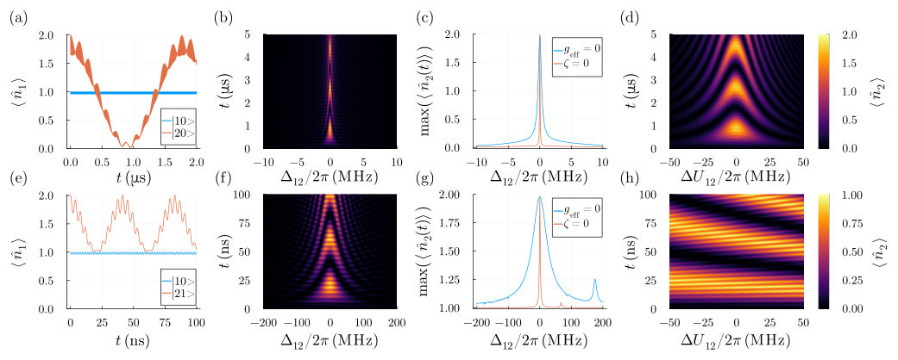
<figcaption class="paper-figure-caption"><b>Fig 3.</b> FIG. 3. (a), (e) Leakage time dynamics for two resonant transmons when the coupler is tuned so that geff = 0. (b), (f) Sensitivity of the leakage transfer to the frequency detuning between the first and second transmons. (c), (g) Maximum leakage transfer between the two transmons while the coupler is tuned so that geff = 0 or ζ = 0. (d), (h) Sensitivity of the leakage transfer to differences in anharmonicity between the transmons while the relevant transition is kept on-resonance. In the top row the initial state is |ψ0⟩= |20⟩and in the bottom row |ψ0⟩= |21⟩. We assume the transmons have identical anharmonicities, so that the detuning of the second transmon in (b) and (f) directly...</figcaption>
</figure>
<figure class="paper-figure-card">
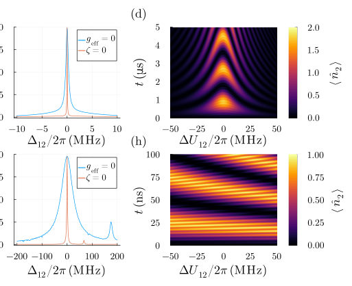
<figcaption class="paper-figure-caption"><b>Fig 4.</b> Figure 3(e)-(h) depicts the dynamics for the setup of a leakage excitation in the first transmon and a single excitation in the second transmon. Again here we assume that the condition geff = 0. The effective |21⟩↔|12⟩ dynamics [case iii) in Fig. 1(c)] occurs now at second order involving two coupler-mediated hoppings ∼λgjc and a single direct transmon-transmon hopping g12. This leads to much faster dynamics, where the leakage propagates between the transmons in 20 ns, see Fig. 3(e). Due to the stronger effective coupling [Fig. 2(b)], the system is less sensitive to the transmon detuning ∆12, as the hopping J21 ∼λgc is more robust against variations in the energy</figcaption>
</figure>
<figure class="paper-figure-card">

<figcaption class="paper-figure-caption"><b>Fig 5.</b> FIG. 4. Leakage tunneling in a chain of three transmons, where the edge transmons are resonant and the middle transmon is detuned by ∆q = ω2 −ω1 = ω2 −ω3. The couplers are tuned so that ζ = 0. In (a)-(c) the initial state is |ψ0⟩= |201⟩. In (d)-(f) the initial state is |ψ0⟩= |211⟩. (a), (d) Time evolution of leakage excitation. (b), (e) Time evolution of leakage excitation for different detunings ∆q. (c), (f) Sensitivity of the tunneling to the off-resonance of the edge transmons ∆31 = ω3 −ω1. For the anharmonicities, transmon-transmon coupling and transmon-coupler coupling we use same parameters as in Fig. 2. The middle transmon is kept at ω2/2π = 4000 MHz and the couplers tuned so that ζ...</figcaption>
</figure>
</div>

<p><strong>Summary.</strong> This paper investigates qubit leakage as a major error source in transmons by quantifying 'leakage mobility.' Using advanced perturbation theory and non-Hermitian Hamiltonians, the authors derive conditions to suppress unwanted excitation hopping. They conclude by proposing and analyzing two passive hardware schemes that utilize this engineered mobility for effective leakage removal.</p>
<p><strong>Why it may be interesting.</strong> This work provides detailed, quantitative theoretical tools for mitigating decoherence in superconducting qubits by engineering the system's Hamiltonian to actively suppress leakage pathways using tunable couplers.</p>
<details>
<summary>Detailed structure</summary>
<p><strong>Main problem.</strong> Qubit leakage is a significant error source in quantum computation, necessitating methods to characterize its dynamics and implement passive removal units.</p>
<p><strong>Main result.</strong> The authors propose two passive leakage removal units—one based on a tunable coupler/pumped transmon and another on junction readout—whose performance can be analyzed using leakage mobility concepts.</p>
<p><strong>Method.</strong> The study employs perturbative methods, including Schrieffer-Wolff transformations and non-Hermitian Hamiltonians, to analyze the effective coupling strengths and decay rates in open quantum systems.</p>
<p><strong>Model / system.</strong> The system modeled is superconducting transmons coupled via tunable couplers. The analysis extends beyond the computational subspace to include leakage excitations (e.g., $|2
angle$ states).</p>
<p><strong>Key observables.</strong> Leakage hopping rates, population decay times ($T^*$), effective coupling strengths ($g_{	ext{eff}}$), and residual ZZ interactions ($\zeta$).</p>
<p><strong>Important parameters / regimes.</strong> Frequency detunings ($\Delta$), anharmonicity differences ($\Delta U_{12}$), and coupler/qubit coupling strengths ($g_c, g_q$).</p>
<p><strong>Assumptions / limitations.</strong> The analysis relies on the dispersive regime ($\lambda \ll 1$) and uses approximations like the Rotating-Wave Approximation (RWA) for passive dynamics.</p>
<p><strong>Figures summary.</strong> Figures illustrate connectivity maps, detuning conditions required for interaction cancellation, time evolution of leakage populations in different removal schemes (Coupler20, Pumped21), and effective hopping strengths vs. detuning.</p>
<p><strong>Paper structure.</strong> The paper systematically analyzes leakage dynamics across increasing complexity: first characterizing general mobility; then analyzing two-transmon systems to suppress coherent exchange ($g_{	ext{eff}}=0$); subsequently extending to three-transmon chains to study higher-order tunneling; and finally proposing specific passive removal units.</p>
</details>
<details>
<summary>Abstract</summary>
<p>Qubit leakage is a noticeable source of errors for quantum computing. In quantum processors, leakage excitations traveling between qubits generate correlated errors and perturb gate implementations. Leakage mobility can also be utilized for creating dedicated leakage removal pathways and removal units. To quantitatively characterize leakage mobility and to guide better design of processor architectures, we study here leakage dynamics in transmons with tunable couplers through numerical and analytical methods. Even if the couplers are tuned to cancel the single-excitation exchange or the ZZ interaction, the leakage hopping rates still persists in the range of 0.8-10 MHz due to transmon nonlinearity. In typical operation regimes, however, transmon frequency detuning localizes leakage excitations. The next-nearest-neighbor transmons can be still be near-resonant opening leakage tunneling channels. To suppress longer-range hopping, we find that the frequency spread of the next-nearest-neighbor transmons needs to be in the range of 1-4 MHz. Utilizing leakage mobility, we propose two passive leakage removal units. One is based on a tunable coupler and a pumped transmon, and another on a junction readout scheme. Based on realistic experimental parameters, our results on selectively mobilizing or localizing leakage excitations are readily applicable in superconducting quantum devices.</p>
</details>
<p><sub><a href="#top">↑ back to top</a></sub></p>

<p><a id="paper-2607.00892"></a></p>
<h3 id="non-self-averaging-topological-anderson-insulator"><a href="http://arxiv.org/abs/2607.00892v1">Non-self-averaging topological Anderson insulator</a></h3>
<p><strong>Authors:</strong> Zheng-Wei Zuo, Jun-Chong Liu<br>
<strong>Type:</strong> theory · <strong>Category:</strong> disordered systems and neural networks · <strong>PDF:</strong> <a href="https://arxiv.org/pdf/2607.00892v1">https://arxiv.org/pdf/2607.00892v1</a><br>
<strong>Analysis basis:</strong> full PDF text, analyzed in chunks
<strong>Topic relevance:</strong> <code>analog quantum simulation</code> <strong>3/5</strong> · <code>Kondo &amp; dissipative impurity</code> <strong>1/5</strong> · <code>methods for driven-dissipative</code> <strong>1/5</strong></p>
<div class="figure-strip-hint">↔ Scroll figures horizontally</div>
<div class="paper-figures-scroll">
<figure class="paper-figure-card">

<figcaption class="paper-figure-caption"><b>Fig 1.</b> FIG. 1. The average of the topological quantum number ⟨Q⟩, and the average ⟨γ⟩and relative variance Rγ of the Lyapunov exponent with the system size of N = 5×104, under Nr = 105</figcaption>
</figure>
<figure class="paper-figure-card">
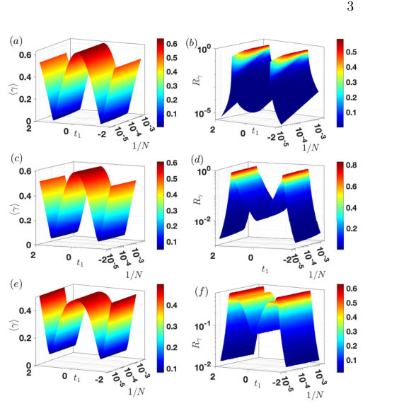
<figcaption class="paper-figure-caption"><b>Fig 2.</b> FIG. 2. The finite size scaling for the average and relative vari- ance of Lyapunov exponent with the disorder strength W = 1 under Nr = 5 × 104 disorder realizations. Panels (a, c, e) ex- hibit the average of Lyapunov exponent for parameters α = 0, 1.5 and 2.5 cases, respectively. while panels (b, d, f) show the corresponding relative variance of Lyapunov exponent.</figcaption>
</figure>
<figure class="paper-figure-card">

<figcaption class="paper-figure-caption"><b>Fig 3.</b> FIG. 4. Histogram of the Lyapunov exponent for different correlated parameters α with the disorder strength W = 1, intra-cell coupling t1 = 0.8, and system size N = 104 under Nr = 105 disorder realizations. (a) α = 0. (b) α = 1. (c) α = 2. (d) α = 3. (e) α = 5. (f) α = 8. (g) α = 10. (h) α = 15. (i) α = 50.</figcaption>
</figure>
<figure class="paper-figure-card">
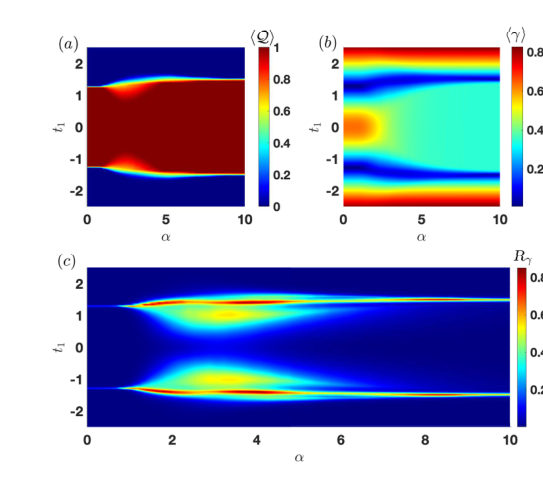
<figcaption class="paper-figure-caption"><b>Fig 4.</b> FIG. 3. The average topological quantum number ⟨Q⟩, the average and relative variance of Lyapunov exponent as a func- tion of correlation exponent α with disorder strength W = 1 and system size N = 5×104, under Nr = 104 disorder realiza- tions. (a) The average topological quantum number. (b) The average the Lyapunov exponent. (c) The relative variance of Lyapunov exponent.</figcaption>
</figure>
<figure class="paper-figure-card">
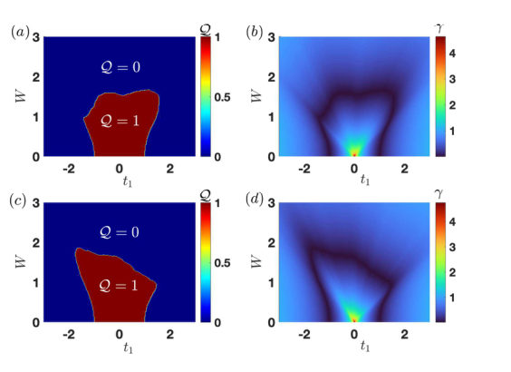
<figcaption class="paper-figure-caption"><b>Fig 5.</b> FIG. 5. The topological quantum number Q and Lyapunov exponent γ with system size N = 105 and correlation param- eter α = 2 for two different disorder realizations. (a, b) The topological quantum number (a) and Lyapunov exponent (b) for one specific disorder configuration. (c, d) The topological quantum number and Lyapunov exponent for another specific disorder configuration.</figcaption>
</figure>
</div>

<p><strong>Summary.</strong> This paper analyzes topological Anderson insulators under long-range correlated disorder, demonstrating that such correlations cause the system's properties to become non-self-averaging. The authors introduce the concept of a 'non-self-averaging topological Anderson insulator,' characterized by a finite relative variance of the Lyapunov exponent in the thermodynamic limit. This shows that for these systems, individual sample measurements are fundamentally different from ensemble averages.</p>
<p><strong>Why it may be interesting.</strong> This work extends the understanding of topological phases into complex disordered regimes, providing a quantitative diagnostic ($R_\gamma$) for when simple averaging techniques fail, which is crucial for modeling real-world amorphous or glassy quantum materials.</p>
<details>
<summary>Detailed structure</summary>
<p><strong>Main problem.</strong> The research investigates topological Anderson insulators subjected to long-range correlated disorder, an area lacking tractable analytical methods compared to standard uncorrelated disorder models.</p>
<p><strong>Main result.</strong> Long-range correlated disorder can induce non-self-averaging behavior in the topological states, meaning single sample properties deviate significantly from ensemble averages.</p>
<p><strong>Method.</strong> The study uses numerical calculations involving ensemble averaging over multiple disorder realizations and analyzing the relative variance of the Lyapunov exponent to diagnose self-averaging breakdown.</p>
<p><strong>Model / system.</strong> The primary model is a disordered Su-Schrieffer-Heeger (SSH) chain, where the disorder ($\epsilon_j$) is characterized by long-range correlations defined by a power-law spectral density $S(k) \sim 1/k^\alpha$.</p>
<p><strong>Key observables.</strong> Topological Quantum Number ($Q$), Lyapunov Exponent ($\gamma$), and the Relative Variance of the Lyapunov Exponent ($R_\gamma$).</p>
<p><strong>Important parameters / regimes.</strong> The correlation parameter $\alpha$ (where $\alpha=0$ is uncorrelated disorder) and the system size $N$.</p>
<p><strong>Assumptions / limitations.</strong> The analysis assumes that non-self-averaging is confirmed by a finite relative variance ($R_\gamma$) in the thermodynamic limit, signaling a breakdown of the Central Limit Theorem.</p>
<p><strong>Figures summary.</strong> Figures compare $\langle Q 
angle$, $\langle \gamma 
angle$, and $R_\gamma$ across different correlation parameters ($\alpha$), showing smooth crossovers for long-range disorder versus sharp transitions for uncorrelated disorder.</p>
<p><strong>Paper structure.</strong> The paper progresses by establishing the limitations of current theory, introducing the model with long-range correlated disorder, demonstrating that this correlation leads to non-self-averaging behavior via finite $R_\gamma$, and concluding that ensemble averages are insufficient for characterizing the phase diagram.</p>
</details>
<details>
<summary>Abstract</summary>
<p>Current research on the disordered topological quantum phases primarily focuses on the uncorrelated and short-range correlated disorder regime. These topological Anderson insulators are typically self-averaging. However, topological quantum systems with long-range correlated disorder have received limited attention due to the absence of tractable analytical methods. In fact, the long-range correlated disorder introduces more complex effects on topological quantum states. Here, we demonstrate that the long-range correlated disorder could induce anomalously statistical feature where the topological Anderson states become non-self-averaging, and the phase diagram is strongly dependent on individual disorder configurations. We term this statistical phase the non-self-averaging topological Anderson insulator. The non-self-averaging property is identified by the non-vanishing finite values of the relative variance of the Lyapunov exponent in the thermodynamic limit, alongside the non-Gaussian distributions of the Lyapunov exponent. Consequently, the topological properties of a single disordered sample deviate from the ensemble average, causing a breakdown of the central limit theorem. The non-self-averaging topological Anderson insulator provides insights into the interplay between correlated disorder and topology.</p>
</details>
<p><sub><a href="#top">↑ back to top</a></sub></p>

<p><a id="paper-2607.00795"></a></p>
<h3 id="three-qubit-nonlocality-paradoxes-beyond-ghz"><a href="http://arxiv.org/abs/2607.00795v1">Three-qubit nonlocality paradoxes: beyond GHZ</a></h3>
<p><strong>Authors:</strong> Nadish de Silva, Santanil Jana, Ming Yin<br>
<strong>Type:</strong> theory · <strong>Category:</strong> quantum information and computing · <strong>PDF:</strong> <a href="https://arxiv.org/pdf/2607.00795v1">https://arxiv.org/pdf/2607.00795v1</a><br>
<strong>Analysis basis:</strong> full PDF text, analyzed in chunks
<strong>Topic relevance:</strong> <code>entanglement &amp; information structure</code> <strong>3/5</strong> · <code>correlated / nonlocal dissipation</code> <strong>1/5</strong></p>
<div class="figure-strip-hint">↔ Scroll figures horizontally</div>
<div class="paper-figures-scroll">
<figure class="paper-figure-card">
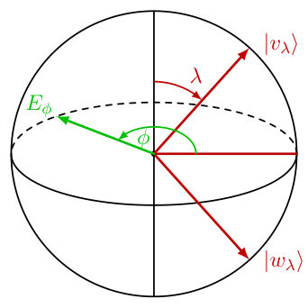
<figcaption class="paper-figure-caption"><b>Fig 1.</b> Figure 1: The one-qubit geometry of a balanced state. The red vectors are the states |vλ⟩and |wλ⟩, symmetric about the equator, while Eϕ is an equatorial measurement.</figcaption>
</figure>
<figure class="paper-figure-card">

<figcaption class="paper-figure-caption"><b>Fig 2.</b> Figure 2: Schematic form of the β-equation. Here βA := β(λ1, A + aπ), βB := β(λ2, B + bπ), and βC := β(λ3, C + cπ). The event (A, B, C) 7→(a, b, c) is impossible exactly when the three angle contributions sum to the target direction π −Φ.</figcaption>
</figure>
<figure class="paper-figure-card">

<figcaption class="paper-figure-caption"><b>Fig 3.</b> Figure 4: A concrete witness path in the bipartite implication graph, drawn on the literal 2N-clock for N = 12. Each circle is a copy of Z24: the blue and orange labels are the outcome-0 and outcome-1 copies of the measurement clock Z12, so antipodal points represent complementary literals of the same measurement. The green-ringed vertices are the literals traversed by the path; the red and blue arrows are implication edges arising from the two Charlie conditionings, and the path alternates between these two partial matchings. Its Alice measurement indices form the return-map coset 1+3Z12 = {1, 4, 7, 10}, while the corresponding Bob indices form the paired reflected coset 2 + 3Z12 = {2, 5,...</figcaption>
</figure>
<figure class="paper-figure-card">
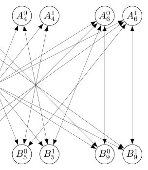
<figcaption class="paper-figure-caption"><b>Fig 4.</b> Figure 5: Implication graph for the total Charlie assignment z = (0, 0, 0, 0) of Example 5.5(1).</figcaption>
</figure>
</div>

<p><strong>Summary.</strong> The paper rigorously classifies three-qubit nonlocality paradoxes by developing advanced graph-theoretic and combinatorial techniques. It demonstrates that these paradoxical structures are far more abundant than previously believed, overturning restrictive assumptions about the necessary form of such paradoxes.</p>
<p><strong>Why it may be interesting.</strong> This work provides deep structural insights into the limits of local realism in multipartite quantum systems, which is foundational knowledge for understanding genuine quantum advantage.</p>
<details>
<summary>Detailed structure</summary>
<p><strong>Main problem.</strong> To completely classify all three-qubit nonlocality paradoxes established via a biconditional parity proof, extending beyond previously known examples like the GHZ paradox.</p>
<p><strong>Main result.</strong> The authors provide a complete structural classification for these paradoxes, showing that the landscape of nonlocality is much richer than previously thought by identifying new exotic paradoxes.</p>
<p><strong>Method.</strong> The work employs graph-theoretic formalisms (2-CNF formulae and implication graphs) combined with combinatorial techniques to map the set of specifications ($  ext{BPP}$) to a canonical data structure ($ ext{CanonicalTriples}$).</p>
<p><strong>Model / system.</strong> The focus is on three-qubit quantum systems exhibiting 'nonlocality paradoxes,' which are logical obstructions to classical probabilistic models arising from restricted joint measurability contexts.</p>
<p><strong>Key observables.</strong> Nonlocal fraction, the existence of a witness path in the implication graph $I_{\Psi}(z)$, and the structure of the associated biconditional parity proof.</p>
<p><strong>Important parameters / regimes.</strong> The number of qubits (fixed at three), measurement settings $\{M\}$, and parameters defining the entangled state $|	ext{B}(\lambda, \Phi)
angle$.</p>
<p><strong>Assumptions / limitations.</strong> Initially relied on five restrictive assumptions; later work drops these to show a richer structure. Specific analyses focus on interpolant states or restricted Charlie measurements.</p>
<p><strong>Figures summary.</strong> Figures illustrate the geometry of balanced states and schematic forms of equations relating measurement angles $(	ext{A}, 	ext{B}, 	ext{C})$ to target directions, alongside implication graphs for specific examples.</p>
<p><strong>Paper structure.</strong> The paper progresses from defining contextuality and nonlocality in three qubits (Chunk 2), establishing the link between paradoxes and biconditional parity proofs using graph theory (Chunk 3), developing a structural classification via 'Charlie clocks' (Chunk 4), presenting counterexamples outside interpolant states (Chunk 5), and finally confirming paradoxicality through detailed analysis of witness paths in implication graphs for various scenarios (Chunks 6, 7, 8).</p>
</details>
<details>
<summary>Abstract</summary>
<p>Quantum nonlocality paradoxes, such as that of GHZ, provide maximally sharp logical obstructions to classical probabilistic models of quantum correlations. They are key resources in a broad variety of information-theoretic tasks that exhibit unconditional quantum advantage. For example, in nonlocal games, which are communication tasks that serve as core technical tools in recent landmark results in quantum computational complexity theory.   Their role in establishing quantum advantage motivated their study by Abramsky et al. who introduced an infinite family of three-qubit paradoxes exhibiting novel conditional structure. This was later extended by de Silva et al. into a full classification program.   In this work, we completely classify all three-qubit nonlocality paradoxes established via a biconditional parity proof; this is a very large class of paradoxes that encompasses all earlier-known examples. We do this by introducing a suite of new structural and combinatorial techniques. We find that the landscape of nonlocality paradoxes is far richer than previously understood, violating regularity conditions underlying all prior constructions.</p>
</details>
<p><sub><a href="#top">↑ back to top</a></sub></p>

<p><a id="paper-2607.01217"></a></p>
<h3 id="diverse-efficiency-of-observable-optimization-for-four-level-quantum-systems-with-higher-order-traps"><a href="http://arxiv.org/abs/2607.01217v1">Diverse efficiency of observable optimization for four-level quantum systems with higher-order traps</a></h3>
<p><strong>Authors:</strong> Alexander Pechen, Boris Volkov<br>
<strong>Type:</strong> both · <strong>Category:</strong> other · <strong>PDF:</strong> <a href="https://arxiv.org/pdf/2607.01217v1">https://arxiv.org/pdf/2607.01217v1</a><br>
<strong>Analysis basis:</strong> full PDF text, analyzed in chunks
<strong>Topic relevance:</strong> <code>driven-dissipative phase transition</code> <strong>2/5</strong> · <code>non-equilibrium dynamics</code> <strong>2/5</strong> · <code>Frenkel-Kontorova</code> <strong>1/5</strong> · <code>analog quantum simulation</code> <strong>1/5</strong> · <code>methods for driven-dissipative</code> <strong>1/5</strong> · <code>non-equilibrium universality</code> <strong>1/5</strong></p>
<div class="figure-strip-hint">↔ Scroll figures horizontally</div>
<div class="paper-figures-scroll">
<figure class="paper-figure-card">
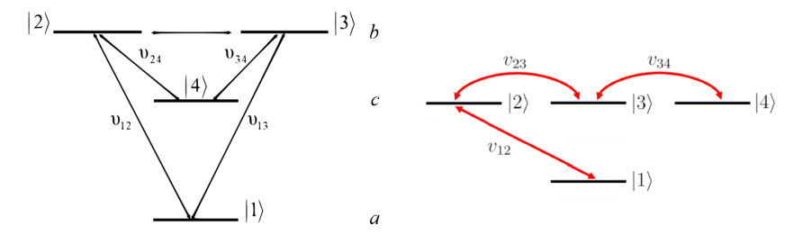
<figcaption class="paper-figure-caption"><b>Fig 1.</b> Figure 1. Left: Energy level structure of an example class of four-level quantum systems with the free Hamiltonian H0 = diag(a, b, b, c) and with allowed transitions |1⟩↔|2⟩, |1⟩↔|3⟩, |2⟩↔|3⟩, |2⟩↔|4⟩, and |3⟩↔|4⟩. We denote this system as a V −V since it has a couple of V -connected triples of levels: One triple is level |1⟩connected with two levels |2⟩and |3⟩, an another triple is level |4⟩connected with the same two levels; ′′−′′ indicates that both upper levels |2⟩and |3⟩are connected. Right: Energy level structure of a four-level quantum system with the chain interaction.</figcaption>
</figure>
<figure class="paper-figure-card">

<figcaption class="paper-figure-caption"><b>Fig 2.</b> Figure 2. Fraction of failed runs for l = 0.1, 0.2, 0.3, . . . , 3.1 for the system S1 (blue solid line) and S2 (green dotted and red dashed lines for the two target observables O and O∗, respectively). Left: Unconstrained optimization using GRAPE. Right: Constrained optimization using GPM. The target observable is O = diag(1, −6, −6, 0) for S1 and S2, and also O∗= diag(1, 6, −6, 0) for S2. The initial state is ρ0 = |4⟩⟨4|. The parameters are T = 20, M = 100, Kstop = 2000, ε = 0.02, and Ierr = 10−3. For each point L = 500 runs are performed. The behaviour of the fraction of failed runs for both systems in essentially different.</figcaption>
</figure>
<figure class="paper-figure-card">

<figcaption class="paper-figure-caption"><b>Fig 3.</b> Figure 3. An example of the optimization results with target observable O. Upper row for the system S1 and l = 1. Bottom row for the system S2 and l = 2. Other parameters are the same as for Fig. 2. Left: behavior of the objective value and norm of the gradient vs iteration number. Totally 1880 iterations were required for S1 and 770 for S2. Right: The obtained optimized controls vs time.</figcaption>
</figure>
</div>

<p><strong>Summary.</strong> This paper investigates optimizing observables in four-level quantum systems using advanced quantum control techniques. It proves that the null control acts as a high-order trap and numerically demonstrates that the efficiency of finding optimal controls varies dramatically depending on whether the system Hamiltonian resembles a V-V structure or a chain interaction. This highlights how subtle differences in system physics dictate the feasibility of quantum state preparation.</p>
<p><strong>Why it may be interesting.</strong> This work directly addresses the practical limitations of quantum control theory by quantifying how system structure dictates optimization success near degenerate or trapped points, which is crucial for designing robust quantum protocols.</p>
<details>
<summary>Detailed structure</summary>
<p><strong>Main problem.</strong> The study analyzes the quantum control landscape for optimizing an observable by finding optimal external time-dependent controls $f(t)$ in specific four-level quantum systems.</p>
<p><strong>Main result.</strong> The null control is proven to be a five-order trap, and the optimization efficiency shows a diverse behavior: sharp increases for V-V systems versus slower changes for chain interaction systems.</p>
<p><strong>Method.</strong> The work combines analytical proofs regarding the order of traps with numerical simulations using GRAPE (unconstrained) and GPM (constrained) algorithms.</p>
<p><strong>Model / system.</strong> The system involves four-level quantum dynamics governed by a Hamiltonian $H(t) = H_0 + f(t)V$. Specific models compared are a V-V type system and an anharmonic system with chain interaction.</p>
<p><strong>Key observables.</strong> Optimization efficiency (fraction of successful runs), the objective functional $  ext{Tr}[U_f^T 
ho_0 U_f^\dagger T O]$, and the order of the control traps.</p>
<p><strong>Important parameters / regimes.</strong> The initial control distance $l$ from the null control, and system-specific Hamiltonian parameters defining the V-V vs. chain interaction structure.</p>
<p><strong>Assumptions / limitations.</strong> The analysis assumes controllability of the quantum system and relies on Taylor expansion methods to define trap orders.</p>
<p><strong>Figures summary.</strong> Figures illustrate energy level structures for the two systems (V-V and chain), and show the fraction of failed runs versus initial control distance $l$ for both optimization methods.</p>
<p><strong>Paper structure.</strong> The paper first establishes the theoretical framework by proving the null control is a high-order trap. It then proceeds to numerical experiments comparing GRAPE and GPM performance on two distinct four-level models, highlighting quantitative differences in efficiency behavior.</p>
</details>
<details>
<summary>Abstract</summary>
<p>In this work, we perform an analytical and numerical analysis of quantum landscapes for controlling special four-level quantum systems for which we prove that the null control is a five-order trap: a $V-V$ system and an anharmonic system. As a control goal, an observable optimization is considered. The rigorous theoretical analysis is followed by the numerical experiments based on the GRadient Ascent Pulse Engineering (GRAPE) algorithm and Gradient Projection Method (GPM), performed to investigate the behavior of the efficiency of optimization for unconstrained (using GRAPE) and constrained (using GPM) controls. As the main result, we observe an interesting phenomenon with a diverse behavior of the optimization efficiency depending on the system Hamiltonian -- sharp increase of the optimization efficiency up to 100% at certain distance from the null control for a V-V system, while much slower and less significant increase (and even small decrease) for a system with the chain interaction. This sharp difference might be related with the fine structure of the subspace of controls where second derivative of the objective functional is zero.</p>
</details>
<p><sub><a href="#top">↑ back to top</a></sub></p>

<p><a id="paper-2607.01030"></a></p>
<h3 id="analytical-connection-between-exact-and-approximate-solutions-of-the-periodically-driven-two-level-system-starting-from-the-heun-equation"><a href="http://arxiv.org/abs/2607.01030v1">Analytical connection between exact and approximate solutions of the periodically-driven two-level system starting from the Heun equation</a></h3>
<p><strong>Authors:</strong> Pietro Follia, Bassano Vacchini<br>
<strong>Type:</strong> theory · <strong>Category:</strong> other · <strong>PDF:</strong> <a href="https://arxiv.org/pdf/2607.01030v1">https://arxiv.org/pdf/2607.01030v1</a><br>
<strong>Analysis basis:</strong> full PDF text, analyzed in chunks
<strong>Topic relevance:</strong> <code>non-equilibrium dynamics</code> <strong>2/5</strong> · <code>Keldysh / 2PI / non-Gaussian methods</code> <strong>1/5</strong> · <code>analog quantum simulation</code> <strong>1/5</strong> · <code>driven-dissipative phase transition</code> <strong>1/5</strong> · <code>methods for driven-dissipative</code> <strong>1/5</strong></p>
<div class="figure-strip-hint">↔ Scroll figures horizontally</div>
<div class="paper-figures-scroll">
<figure class="paper-figure-card">
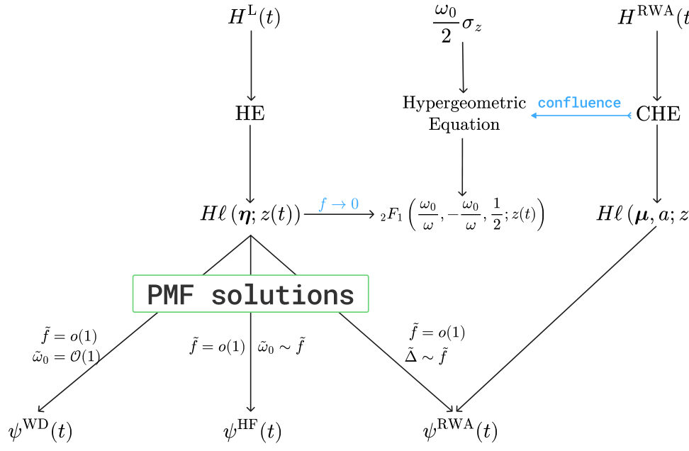
<figcaption class="paper-figure-caption"><b>Fig 1.</b> FIG. 1. The figure provides a logical scheme of the connections between the different equations and their solutions and limits considered in the manuscript. Here, ψWD(t) denotes the approximate solution in the weak-driving regime [see Eq. (69)], ψHF(t) the high-frequency solution [see Eq. (84)], and ψRWA(t) the solution in the rotating-wave approximation [see Eq. (79)]. According to Eqs. (51), (52) and (71) we have ˜f = f/ω, ˜ ω0 = ω0/2ω and ˜∆= ∆/ω respectively, that define the relevant limiting situations.</figcaption>
</figure>
</div>

<p><strong>Summary.</strong> This paper analytically connects the exact solutions for a periodically-driven two-level system under linear driving and the rotating-wave approximation by mapping the dynamics onto Heun differential equations. The authors use sophisticated mathematical techniques, including hypergeometric function expansions and perturbative analysis, to rigorously demonstrate this connection while recovering crucial physical corrections like the Bloch-Siegert shifts.</p>
<p><strong>Why it may be interesting.</strong> This work provides deep mathematical insight into the quantum dynamics of fundamental models like qubits, connecting complex physical approximations (RWA) to exact analytical forms through advanced special functions theory. This is highly relevant for understanding open quantum systems and quantum optics.</p>
<details>
<summary>Detailed structure</summary>
<p><strong>Main problem.</strong> The primary goal is establishing a rigorous analytical connection between exact solutions for periodically-driven two-level systems (TLS) derived under different physical approximations.</p>
<p><strong>Main result.</strong> The authors successfully establish a direct analytic link between the exact solutions obtained for linear driving and those for the rotating-wave approximation, recovering higher-order corrections like Stark and Bloch-Siegert shifts.</p>
<p><strong>Method.</strong> The analysis maps the time-dependent Schrödinger equation onto Heun differential equations (or confluent forms) and utilizes techniques involving hypergeometric functions, path-multiplicative Floquet solutions, and perturbative expansions in the weak-driving limit.</p>
<p><strong>Model / system.</strong> The system is a periodically-driven two-level system (TLS), modeled by a time-dependent Hamiltonian $H(t) = f(t) \cdot \sigma$, where $\sigma$ are Pauli matrices. The dynamics are governed by the Schrödinger equation, which reduces to Heun equations.</p>
<p><strong>Key observables.</strong> The primary observables are the time evolution of the system's state vector components ($\psi_e(	au)$), and derived quantities include the Stark and Bloch-Siegert shifts.</p>
<p><strong>Important parameters / regimes.</strong> Key parameters include the driving frequency ($\omega$), the transition frequency ($\omega_0$), and the ratio between them, which define different regimes (weak-driving, high-frequency, resonant).</p>
<p><strong>Assumptions / limitations.</strong> The analysis relies on mapping to Heun equations and is most rigorously developed in the weak-driving regime ($  ilde{f} = o(1)$), though it claims general validity.</p>
<p><strong>Figures summary.</strong> Not specified by notes; the structure implies mathematical derivations involving differential equations, expansions, and parameter constraints.</p>
<p><strong>Paper structure.</strong> The paper systematically introduces the governing Heun equations for different driving types (linear vs. RWA), derives exact solutions using hypergeometric function representations, establishes the connection via perturbative analysis, and verifies results in various limiting regimes.</p>
</details>
<details>
<summary>Abstract</summary>
<p>We investigate and establish an analytic connection between the exact solutions describing the dynamics of a two-level system driven by periodic external fields, focusing on the cases of linear driving and the so-called rotating-wave approximation, or circular driving. In both cases, the exact solutions can be obtained by mapping the Schrodinger equation onto Heun equations: the confluent Heun equation for linear driving and the Heun equation for the rotating-wave case. In particular, we demonstrate a direct analytic connection between the exact solutions for linear driving and those for the rotating-wave case. This result is obtained by analyzing local solutions expressed in terms of hypergeometric functions, which, in the case of the confluent Heun equation, can be derived by considering path-multiplicative Floquet solutions involving a bilateral series. This series leads to two continued-fraction expansions that can be perturbatively solved by imposing a suitable consistency condition. The connection between the linear-driving and rotating-wave solutions is established through a perturbative procedure that allows us to recover not only the rotating-wave approximation itself, but also the correct Stark and Bloch-Siegert shifts, as well as the so-called high-frequency approximation.</p>
</details>
<p><sub><a href="#top">↑ back to top</a></sub></p>

<p><a id="paper-2607.00599"></a></p>
<h3 id="entropy-driven-structural-phase-transition-in-nbmath712mathclmath713math-via-density-functional-theory-and-an-effective-model"><a href="http://arxiv.org/abs/2607.00599v1">Entropy-Driven Structural Phase Transition in Nb$_3$Cl$_8$ via Density Functional Theory and an Effective Model</a></h3>
<p><strong>Authors:</strong> Chenjie Zhu, Shuai Zhang, Zhong Fang, Zhijun Wang, Quansheng Wu, Hongming Weng<br>
<strong>Type:</strong> theory · <strong>Category:</strong> strongly correlated electrons · <strong>PDF:</strong> <a href="https://arxiv.org/pdf/2607.00599v1">https://arxiv.org/pdf/2607.00599v1</a><br>
<strong>Analysis basis:</strong> full PDF text, analyzed in chunks
<strong>Topic relevance:</strong> <code>driven-dissipative phase transition</code> <strong>2/5</strong> · <code>Frenkel-Kontorova</code> <strong>1/5</strong> · <code>Keldysh / 2PI / non-Gaussian methods</code> <strong>1/5</strong> · <code>analog quantum simulation</code> <strong>1/5</strong> · <code>exotic spin models in light-matter</code> <strong>1/5</strong></p>
<div class="figure-strip-hint">↔ Scroll figures horizontally</div>
<div class="paper-figures-scroll">
<figure class="paper-figure-card">

<figcaption class="paper-figure-caption"><b>Fig 1.</b> FIG. 1. Crystal structures of Nb3Cl8 in the α and β phases and the interpolation path between them. Light green spheres denote Cl atoms, while blue and red spheres denote Nb atoms in adjacent layers. (a) Top view of the interlayer slip from the staggered α stacking to the partially eclipsed β stacking. The black arrow indicates the dominant structural displacement across the transition. (b) Side view of the corresponding stacking sequences. Here (R, site) labels the lattice translation R and the cluster site within the unit cell. The α phase has uniform staggered AA′ stacking, whereas the β phase adopts an AA′BB′CC′ stacking sequence[8], alternating between staggered and eclipsed interlayer...</figcaption>
</figure>
<figure class="paper-figure-card">

<figcaption class="paper-figure-caption"><b>Fig 2.</b> FIG. 2. DFT total-energy difference per unit cell, ∆EDFT = EDFT −Eα DFT, versus the interpolated structural parameter between the α and β phases. The α-phase energy is taken as the reference.</figcaption>
</figure>
<figure class="paper-figure-card">

<figcaption class="paper-figure-caption"><b>Fig 3.</b> FIG. 3. (a) Phonon dispersions of the α phase (blue) and β phase (orange) of Nb3Cl8, plotted along the high-symmetry path of the α phase. Inset (i) highlights the Γ-point Layer-Breathing Mode, with frequencies of 1.729 THz in the α phase and 1.826 THz in the β phase. Inset (ii) highlights the Γ-point modes near 5.3 THz for comparison with experimentally observed phonon modes. In the α phase, the A1g and A2u modes are at 5.228 and 5.366 THz, respectively; in the β phase, the A2u and A1g modes are at 5.341 and 5.354 THz, respectively. (b) Corresponding cumulative phonon density of states. The α-phase curve is shifted slightly toward lower frequencies, indicating an overall phonon softening...</figcaption>
</figure>
<figure class="paper-figure-card">

<figcaption class="paper-figure-caption"><b>Fig 4.</b> FIG. 4. Phonon Helmholtz free-energy difference per unit cell, ∆Fphonon = F α phonon −F β phonon, versus temperature. The decomposition includes the phonon internal-energy dif- ference ∆Uphonon (blue line) and the entropy contribution −T∆Sphonon (blue area). At T = 0, ∆Uphonon reduces to the phonon zero-point-energy difference ∆Ezpe = Eα zpe −Eβ zpe.</figcaption>
</figure>
<figure class="paper-figure-card">

<figcaption class="paper-figure-caption"><b>Fig 5.</b> FIG. 5. Spin entropy per unit cell of the effective Heisen- berg model versus temperature. For the α phase (blue), the entropy is obtained from the HTSE using the P[4, 6] Pad´e ap- proximant. For the β phase (orange), the entropy is obtained from the isolated-dimer model.</figcaption>
</figure>
</div>

<p><strong>Summary.</strong> This work develops a comprehensive free-energy framework combining DFT and an extended Hubbard model to explain the structural phase transition in $   ext{Nb}_3   ext{Cl}_8$. The analysis reveals that this transition is governed by a delicate balance between phonon entropy (stabilizing the high-T phase) and spin entropy/lattice dimerization (favoring the low-T phase). This provides a detailed, multi-faceted understanding of how competing entropic forces dictate material structure.</p>
<p><strong>Why it may be interesting.</strong> The explicit coupling of vibrational entropy (phonon softening/hardening) with magnetic spin entropy to drive a structural transition is highly relevant for understanding emergent quantum phenomena in correlated materials, bridging solid-state physics and statistical mechanics.</p>
<details>
<summary>Detailed structure</summary>
<p><strong>Main problem.</strong> The study aims to clarify the microscopic origin of a first-order structural phase transition in $    ext{Nb}_3   ext{Cl}_8$ around 90 K, which suppresses its potential quantum spin liquid (QSL) state.</p>
<p><strong>Main result.</strong> The transition is jointly driven by phonon and spin entropy; high temperatures favor the $\alpha$ phase due to soft phonons and large spin entropy, while low temperatures favor the $eta$ phase via interlayer dimerization and spin-singlet formation.</p>
<p><strong>Method.</strong> A unified free-energy framework combining first-principles DFT calculations with an extended Hubbard model is employed to analyze lattice, phonon, and spin contributions separately.</p>
<p><strong>Model / system.</strong> The system is $ ext{Nb}_3   ext{Cl}_8$, modeled using a low-energy effective Hamiltonian derived from the $2a_1$ orbital manifold. The total free energy incorporates DFT energies, harmonic phonon free energy, and Hubbard model contributions.</p>
<p><strong>Key observables.</strong> Helmholtz free energies ($\alpha$ vs $eta$), phonon frequencies, generalized enthalpy under pressure, and transition temperature ($T_c$).</p>
<p><strong>Important parameters / regimes.</strong> The critical structural transition temperature ($T_c \approx 113	ext{ K}$), the critical uniaxial pressure for suppression ($\approx 2.6	ext{ GPa}$), and Hubbard parameters ($U, V, t$).</p>
<p><strong>Assumptions / limitations.</strong> Approximations include using the harmonic approximation for phonons (neglecting anharmonicity) and treating the low-energy subspace explicitly within the correlated model.</p>
<p><strong>Figures summary.</strong> Figures illustrate phonon dispersions showing softening in $\alpha$ vs. hardening in $eta$, total free energy crossing curves determining $T_c$, and generalized enthalpy plots demonstrating pressure stabilization of the $\alpha$ phase.</p>
<p><strong>Paper structure.</strong> The paper builds a comprehensive free-energy functional by combining DFT results with contributions from lattice vibrations (phonons) and electronic correlations (Hubbard model). It analyzes how entropy terms dictate the stability crossover between the two structural phases ($\alpha \leftrightarrow eta$) under varying conditions like temperature and pressure.</p>
</details>
<details>
<summary>Abstract</summary>
<p>As a prototypical flat-band cluster Mott insulator on an effective triangular lattice, Nb$_3$Cl$_8$ is a potential candidate for hosting a quantum spin liquid (QSL) state. Nevertheless, a first-order structural phase transition around 90K transforms the high-temperature paramagnetic $α$ phase into the low-temperature nonmagnetic $β$ phase, suppressing the candidate QSL regime of the $α$ phase. To clarify the microscopic origin of this transition, we combine first-principles calculations with an extended Hubbard model to construct a unified free-energy framework. This framework reveals that the transition is jointly driven by phonon and spin entropy: the $α$ phase is stabilized by softer phonons and larger paramagnetic spin entropy, whereas the $β$ phase is favored by interlayer dimerization, which hardens the phonons and quenches the spin entropy through singlet formation. Furthermore, by evaluating the pressure-dependent generalized enthalpy, we provide a thermodynamic explanation for the suppression of the transition under c-axis uniaxial pressure, where stabilizing the $α$ phase may allow the candidate QSL regime of the $α$ phase to be explored at low temperatures.</p>
</details>
<p><sub><a href="#top">↑ back to top</a></sub></p>

<p><a id="paper-2607.01085"></a></p>
<h3 id="fisher-glasses-tail-certified-quantum-metrology-in-quenched-environments"><a href="http://arxiv.org/abs/2607.01085v1">Fisher Glasses: Tail-Certified Quantum Metrology in Quenched Environments</a></h3>
<p><strong>Authors:</strong> El Mustapha Mansouri, Keigo Arai<br>
<strong>Type:</strong> theory · <strong>Category:</strong> other · <strong>PDF:</strong> <a href="https://arxiv.org/pdf/2607.01085v1">https://arxiv.org/pdf/2607.01085v1</a><br>
<strong>Analysis basis:</strong> full PDF text, analyzed in chunks
<strong>Topic relevance:</strong> <code>non-equilibrium dynamics</code> <strong>2/5</strong> · <code>QC/QI experiment</code> <strong>1/5</strong> · <code>methods for driven-dissipative</code> <strong>1/5</strong> · <code>quantum measurements</code> <strong>1/5</strong> · <code>spintronics-quantum-optics interface</code> <strong>1/5</strong></p>
<div class="figure-strip-hint">↔ Scroll figures horizontally</div>
<div class="paper-figures-scroll">
<figure class="paper-figure-card">
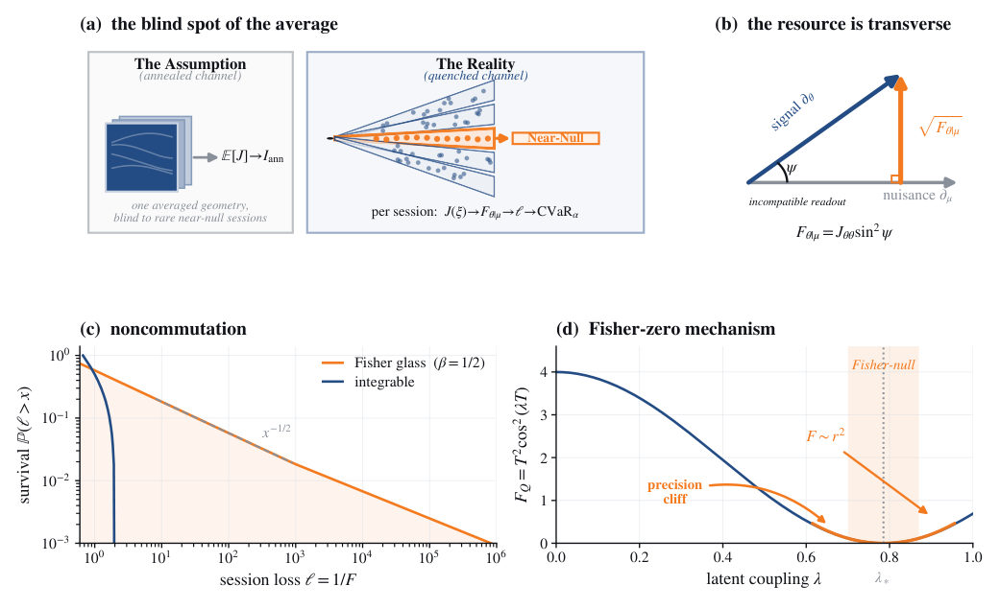
<figcaption class="paper-figure-caption"><b>Fig 1.</b> FIG. 1. Quenched Fisher geometry: a visual abstract. (a) The averaged-channel paradigm certifies one geometry, E[J] → average QFI, whereas the quenched, non-self-averaging experiment samples a distribution of session-resolved geometries J(ξ), each fed through the noncommuting pipeline J →Fθ|µ →ℓ→CVaRα of Eq. (1), so rare near-null sessions (F⊥≈0) hidden by the average dominate the loss. (b) The certified resource is the response transverse to the latent nuisance, Fθ|µ = Jθθ sin2 ψ; for a vector target the obstruction is measurement incompatibility, quantified by the Holevo loss of Sec. V. (c) Two latent ensembles with the same mean E[F] = 1 but different inverse-loss tails, one integrable...</figcaption>
</figure>
<figure class="paper-figure-card">

<figcaption class="paper-figure-caption"><b>Fig 2.</b> FIG. 2. Signal–disorder action separation. Tail-certified amplification is controlled by the ratio of transverse signal action to disorder action. (a) A protocol writes signal and latent disorder into the probe with generally different action gains gs and gd; the fixed-safe-phase resource is (gs/gd)2, which becomes (g⊥/gd)2 after nuisance projection. (b) Dimensionless tail factor Rα(Φ), with Φ the dimensionless safe latent phase, for a two-state Loschmidt response, with first zero at u1 = π/2; the certified information vanishes once the latent support reaches the zero. (c) Common-generator amplification, gs = gd = M and Φ = MΛT, collapses Λ2ITC α,M for different M. (d) Separated disorder...</figcaption>
</figure>
<figure class="paper-figure-card">
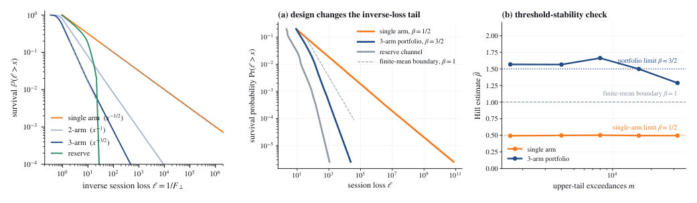
<figcaption class="paper-figure-caption"><b>Fig 3.</b> FIG. 3. Tail diagnostics from session losses. Left: survival functions of the inverse session loss ℓ= 1/F⊥for the four design classes: a single unsafe arm follows the nonintegrable x−1/2 law (below the finite-mean boundary β = 1), a two-arm portfolio is marginal (x−1), a zero-nondegenerate three-arm portfolio steepens to x−3/2, and a configuration-wise Fisher reserve removes the algebraic zero tail; the measured slope is the inverse-loss tail index β. Right: experimental certification from calibrated session losses: (a) survival curves distinguishing unsafe, portfolio, and reserve designs, and (b) Hill upper-tail estimates of β giving a finite-sample stability check against the β = 1...</figcaption>
</figure>
<figure class="paper-figure-card">

<figcaption class="paper-figure-caption"><b>Fig 4.</b> FIG. 4. Annealed winner, quenched loser. A platform-level shallow-NV design tournament compares four Ramsey protocols under the same shot budget and latent session ensemble. (a) The standard average-QFI rule selects Tavg &gt; Tsafe, crossing into the Fisher-glass region, while the tail-certified optimizer stays at TTC &lt; Tsafe. (b) Session-resolved inverse-loss tails expose the mechanism: the average-QFI arm has a much heavier bad-session tail, while portfolio and reserve designs suppress the far tail. (c) With finite calibration shots, finite sensing shots, and an explicit MLE, the plotted tail-certified MLE precision 1/CVaR0.95(MSEMLE) tracks the predicted ranking. (d) Scoreboard:...</figcaption>
</figure>
<figure class="paper-figure-card">

<figcaption class="paper-figure-caption"><b>Fig 5.</b> FIG. 5. Sensitivity of the platform-level certificate. Sweeps around the representative shallow-NV parameters in Table I. (a)–(c) The finite-session ratio of safe-window to average-QFI tail-certified information is shown as the median over 24 inde- pendent latent ensembles with Nsess = 32000 sessions each. Shading gives a 90% bootstrap confidence interval for the median log-ratio; the raw 10–90% ensemble spread is reported in the processed results file. The panels vary fluctuator occupancy Nf, dimensionless coupling range ΛT ∗ 2 , and CVaR level α. The dotted line in (b) marks ΛT ∗ 2 = π/ √</figcaption>
</figure>
</div>

<p><strong>Summary.</strong> This paper introduces 'tail-certified' quantum metrology, recognizing that standard averaging of Fisher information fails when environmental noise freezes during measurements. It develops a rigorous framework using Conditional Value-at-Risk to certify the true achievable precision based on the worst-case (upper tail) performance across many noisy sessions. This is critical for designing robust quantum sensors operating in complex, fluctuating environments.</p>
<p><strong>Why it may be interesting.</strong> This work provides a crucial, advanced statistical tool for quantum sensing that moves beyond simple mean estimates to quantify performance guarantees against rare but detrimental noise realizations, which is vital for real-world quantum hardware deployment.</p>
<details>
<summary>Detailed structure</summary>
<p><strong>Main problem.</strong> Standard quantum metrology certification based on averaged Fisher information fails when sensors operate in quenched environments where environmental noise varies between measurements. The goal is to quantify the true, robust precision achievable under these non-self-averaging conditions.</p>
<p><strong>Main result.</strong> The certified resource must be quantified using tail statistics (Conditional Value-at-Risk) applied to the inverse loss, which yields a 'tail-certified information' that can be orders of magnitude higher than the average QFI in certain regimes.</p>
<p><strong>Method.</strong> The methodology involves projecting out nuisance directions associated with slow environmental fluctuations and then applying extreme value theory concepts via CVaR to the resulting inverse-loss function. This establishes a rigorous, non-averaging certification bound.</p>
<p><strong>Model / system.</strong> The analysis is applied to quantum sensors like shallow Nitrogen-Vacancy (NV) centers, superconducting qubits, and semiconductor spin qubits operating in environments with latent disorder ($\xi$). The theoretical framework models the measurement process as conditional on this frozen environmental state.</p>
<p><strong>Key observables.</strong> Tail-Certified Information (ITC), Inverse-Loss Tail Exponent ($eta$), Transverse Fisher Information ($F_{	heta|\mu}$), and the Quantum Fisher Information (QFI).</p>
<p><strong>Important parameters / regimes.</strong> The tail index $eta$ dictates finite certification; safe windows, portfolio size ($K$), and the CVaR confidence level ($\alpha$) are critical parameters.</p>
<p><strong>Assumptions / limitations.</strong> The primary assumption violated by standard theory is that the experiment samples an averaged channel; instead, it samples a specific, frozen environmental configuration ($\xi$).</p>
<p><strong>Figures summary.</strong> Figures contrast average-QFI optimization (which can be 'tail-catastrophic') against tail-certified designs (like portfolios or reserve channels), showing significant recovery of certified information. They also illustrate the dependence on the inverse-loss tail exponent $eta$.</p>
<p><strong>Paper structure.</strong> The paper progresses by first identifying the failure of averaged metrics, then developing the quenched certification pipeline ($  ext{Condition}  o   ext{Project}    o   ext{Invert Loss}    o   ext{Tail Certify}$). It establishes theoretical no-go theorems and concludes with practical design laws (e.g., Fisher reserves) demonstrated on NV center simulations.</p>
</details>
<details>
<summary>Abstract</summary>
<p>Quantum metrological advantage is certified by averaged Fisher responses: contrast, susceptibility, or quantum Fisher information (QFI). This fails in quenched sensors, where slow environmental variables freeze within a session but vary between repetitions: shallow nitrogen-vacancy (NV) centers, superconducting qubits with slow two-level fluctuators, and semiconductor spin qubits in drifting charge noise. They sample session-resolved Fisher geometries, not an averaged channel. Certification conditions on the latent session, projects nuisance directions, inverts to attainable loss, then tail-certifies; this inverse upper-tail loss defines quenched tail-certified information. A no-go theorem: no averaged Fisher data determine this certificate; ensembles sharing averaged Fisher matrix, QFI, and projected information have finite or zero certified precision. A Fisher-zero integrability transition governs collapse: the inverse-loss tail exponent $β$ sets the boundary, with nonintegrable certified loss for $β\le 1$, even when annealed information is large or scaling. The certified quantum resource is response transverse to latent disorder, not raw amplification sharing its generator; universal design laws: safe windows, nondegenerate portfolios, Fisher reserves, action separation, Fisher-cut criteria. A shallow-NV Ramsey tournament shows average-QFI optimization is tail-catastrophic, whereas tail-certified designs recover nearly three orders of magnitude in certified information at equal shot budget and latent ensemble. These non-self-averaging phases are Fisher glasses, governed by Fisher-zero rare-event statistics.</p>
</details>
<p><sub><a href="#top">↑ back to top</a></sub></p>

<p><a id="paper-2607.01009"></a></p>
<h3 id="phase-diagram-of-a-double-occupancy-cell-model-of-a-fluid-with-curie-weiss-interaction"><a href="http://arxiv.org/abs/2607.01009v1">Phase diagram of a double-occupancy cell model of a fluid with Curie-Weiss interaction</a></h3>
<p><strong>Authors:</strong> R. V. Romanik, O. A. Dobush, M. P. Kozlovskii, I. V. Pylyuk, M. A. Shpot<br>
<strong>Type:</strong> theory · <strong>Category:</strong> statistical mechanics · <strong>PDF:</strong> <a href="https://arxiv.org/pdf/2607.01009v1">https://arxiv.org/pdf/2607.01009v1</a><br>
<strong>Analysis basis:</strong> full PDF text, analyzed in chunks
<strong>Topic relevance:</strong> <code>analog quantum simulation</code> <strong>2/5</strong> · <code>Keldysh / 2PI / non-Gaussian methods</code> <strong>1/5</strong> · <code>driven-dissipative phase transition</code> <strong>1/5</strong></p>
<div class="figure-strip-hint">↔ Scroll figures horizontally</div>
<div class="paper-figures-scroll">
<figure class="paper-figure-card">

<figcaption class="paper-figure-caption"><b>Fig 1.</b> Fig. 1: Phase diagram of the double-occupancy cell model in the case of distinguishable particles. Blue curve: the line of critical points at a &lt; atc. Red curves: the lines of critical points at a &gt; atc. Black curve: the line of triple points in the interval atc &lt; a &lt; 0.5. All the lines meet at the tricritical point with a = atc = 1</figcaption>
</figure>
<figure class="paper-figure-card">

<figcaption class="paper-figure-caption"><b>Fig 2.</b> Fig. 2: The T ∗−ρ∗phase diagrams of the double-occupancy cell model in the case of distinguishable particles at different values of a = ∆/J. Solid curves are the coexistence lines. (a): The coexistence line between phases I and III ends at the critical point. (b) and (c): Coexistence lines between phases I — II and II — III are present in the temperature interval T ∗ tr ≤T ∗≤T ∗ c , each ending at its own critical point. For T ∗≤T ∗ tr, phases I and III coexist. T ∗ tr is the temperature of the triple point. (d): Coexistence lines between phases I — II and II — III are present for 0 ≤T ∗≤T ∗ c , each ending at its own critical point.</figcaption>
</figure>
<figure class="paper-figure-card">
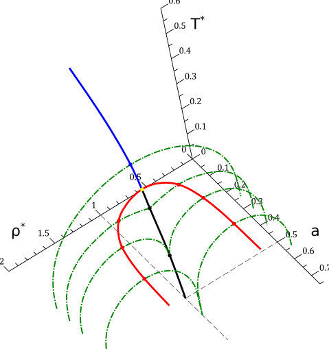
<figcaption class="paper-figure-caption"><b>Fig 3.</b> Fig. 3: The phase diagram in the (T ∗, ρ∗, a)-space for the case of distinguishable particles. The figure combines representations of Figs. 1 and 2 in one view. Green dashed curves: the coexistence lines at a = 0.3, a = 0.375, a = 0.45, and a = 0.6. Blue and red curves are the critical-point lines. Black curve is the triple-point line.</figcaption>
</figure>
<figure class="paper-figure-card">

<figcaption class="paper-figure-caption"><b>Fig 4.</b> Fig. 4: Pair distribution function g(2)(r1, r2) as a function of separation r = |r1 −r2|. The quantity r∗denotes distance from the point with coordinate r1 to the boundary of the cubic cell containing r1, in the direction of r2. The results are presented for the system of distinguishable particles, at a = 0.5. Phase I: T ∗= 0.25, ρ∗= 0.1; Phase II: T ∗= 0.2, ρ∗= 0.5; Phase III: T ∗ c = 0.25, ρ∗= 1.9; Supercritical: T ∗= 0.5, ρ∗= 0.5. At r &gt; r∗, g(2) = 1.</figcaption>
</figure>
</div>

<p><strong>Summary.</strong> This paper analyzes a double-occupancy cell fluid model with Curie-Weiss interactions, demonstrating its rich phase diagram structure. By relating it to the Blume-Capel model, the authors map out multiple coexistence regimes, including gas-liquid and liquid-liquid transitions. The complexity arises from the interplay between local repulsion and global attraction.</p>
<p><strong>Why it may be interesting.</strong> While focused on classical statistical mechanics, the mapping to the Blume-Capel model connects it to quantum spin systems, making the study of complex phase transitions relevant for understanding critical phenomena in many-body physics.</p>
<details>
<summary>Detailed structure</summary>
<p><strong>Main problem.</strong> The study investigates the complex phase diagram and rich thermodynamic behavior of a fluid modeled by a double-occupancy cell model interacting via Curie-Weiss forces.</p>
<p><strong>Main result.</strong> The competition between local repulsion and long-range attraction generates complex phase behavior, including regimes with single/double critical points, tricritical points, and triple-point formation, leading to gas-liquid and liquid-liquid coexistence.</p>
<p><strong>Method.</strong> The analysis uses the grand-canonical ensemble formalism, employing analytical techniques like Laplace's method on integrals derived from the partition function.</p>
<p><strong>Model / system.</strong> The system is a double-occupancy cell fluid model ($n_l \in \{0, 1, 2\}$) whose Hamiltonian is shown to be isomorphic to the Blume-Capel model on a complete graph. Interactions include global Curie-Weiss attraction and local repulsion.</p>
<p><strong>Key observables.</strong> Critical temperatures ($T_c^*$), critical densities ($
ho_c^*$), triple-point coordinates, and phase coexistence lines (Gas $\leftrightarrow$ LDL $\leftrightarrow$ HDL).</p>
<p><strong>Important parameters / regimes.</strong> The ratio $a = \Delta/J$, which governs the transition between different types of critical points.</p>
<p><strong>Assumptions / limitations.</strong> Calculations are performed in the thermodynamic limit ($N 	o \infty$), and the analysis distinguishes results for distinguishable versus indistinguishable particles.</p>
<p><strong>Figures summary.</strong> Figures illustrate the phase diagrams (T<em>-rho</em> vs a) showing coexistence lines, critical point loci (blue/red), and triple-point lines (black).</p>
<p><strong>Paper structure.</strong> The paper progresses by establishing the model's isomorphism, deriving the grand partition function, applying advanced mathematical techniques (Laplace's method), and then detailing the phase diagram analysis for both distinguishable and indistinguishable particle cases.</p>
</details>
<details>
<summary>Abstract</summary>
<p>A double-occupancy cell model of a fluid with Curie-Weiss interaction is studied. First, we show that the model is isomorphic to the Blume-Capel model on a complete graph through a simple transformation from spin to occupancy variables. We then investigate its phase behavior within the grand-canonical ensemble using a combination of analytical and numerical methods. Despite its simplicity, the model exhibits a remarkably rich thermodynamic behavior depending on the ratio between the local repulsive and global attractive interactions. We identify regimes characterized by a single critical point, two distinct critical points, tricritical behavior, and triple-point formation. For sufficiently strong repulsion, the system possesses three fluid phases of different densities, leading to both gas-liquid and liquid-liquid coexistence. The locations of the critical, tricritical, and triple points are determined, and the corresponding phase diagrams are constructed. These results demonstrate that the competition between double-occupancy repulsion and long-range attraction is sufficient to generate complex phase behavior in a minimal multiple-occupancy lattice-gas model.</p>
</details>
<p><sub><a href="#top">↑ back to top</a></sub></p>

<p><a id="paper-2607.00266"></a></p>
<h3 id="quantum-advantage-resource-of-a-two-mode-gaussian-state-analytical-theory-of-convex-optimization-and-a-galois-no-go-for-the-closed-form-solution"><a href="http://arxiv.org/abs/2607.00266v1">Quantum-advantage resource of a two-mode Gaussian state: Analytical theory of convex optimization and a Galois no-go for the closed-form solution</a></h3>
<p><strong>Authors:</strong> Kunwar Kalra, V. V. Kocharovsky<br>
<strong>Type:</strong> theory · <strong>Category:</strong> quantum information and computing · <strong>PDF:</strong> <a href="https://arxiv.org/pdf/2607.00266v1">https://arxiv.org/pdf/2607.00266v1</a><br>
<strong>Analysis basis:</strong> full PDF text, analyzed in chunks
<strong>Topic relevance:</strong> <code>entanglement &amp; information structure</code> <strong>2/5</strong> · <code>Keldysh / 2PI / non-Gaussian methods</code> <strong>1/5</strong></p>
<div class="figure-strip-hint">↔ Scroll figures horizontally</div>
<div class="paper-figures-scroll">
<figure class="paper-figure-card">

<figcaption class="paper-figure-caption"><b>Fig 1.</b> Low-resolution page preview, page 2</figcaption>
</figure>
<figure class="paper-figure-card">
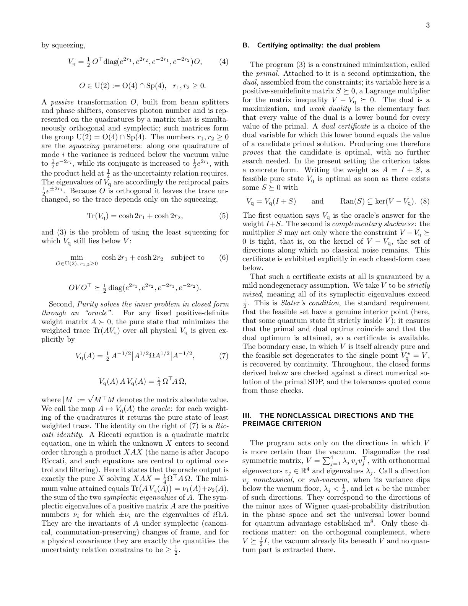
<figcaption class="paper-figure-caption"><b>Fig 2.</b> Low-resolution page preview, page 3</figcaption>
</figure>
<figure class="paper-figure-card">
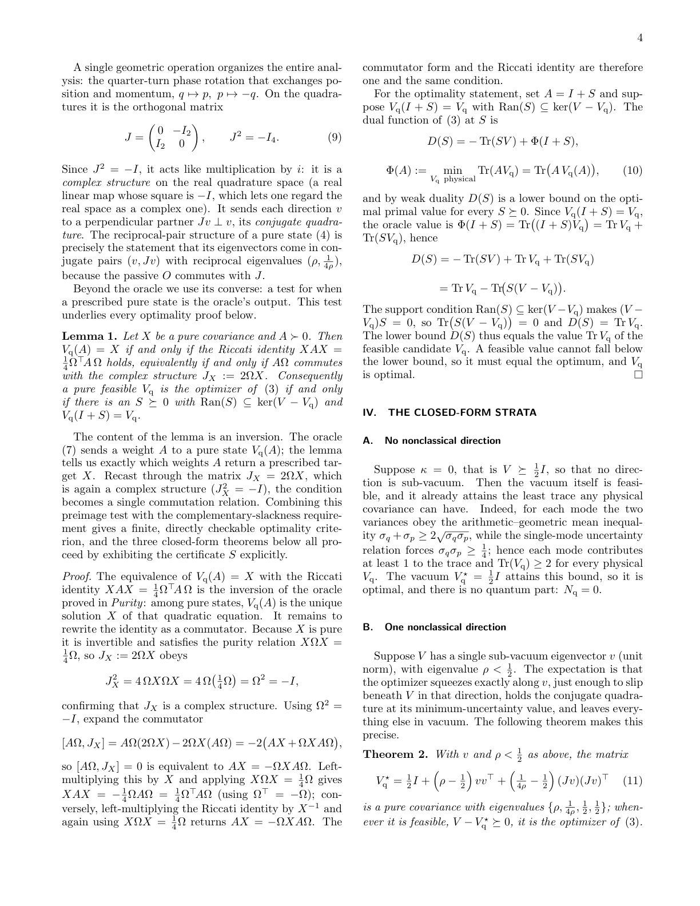
<figcaption class="paper-figure-caption"><b>Fig 3.</b> Low-resolution page preview, page 4</figcaption>
</figure>
<figure class="paper-figure-card">
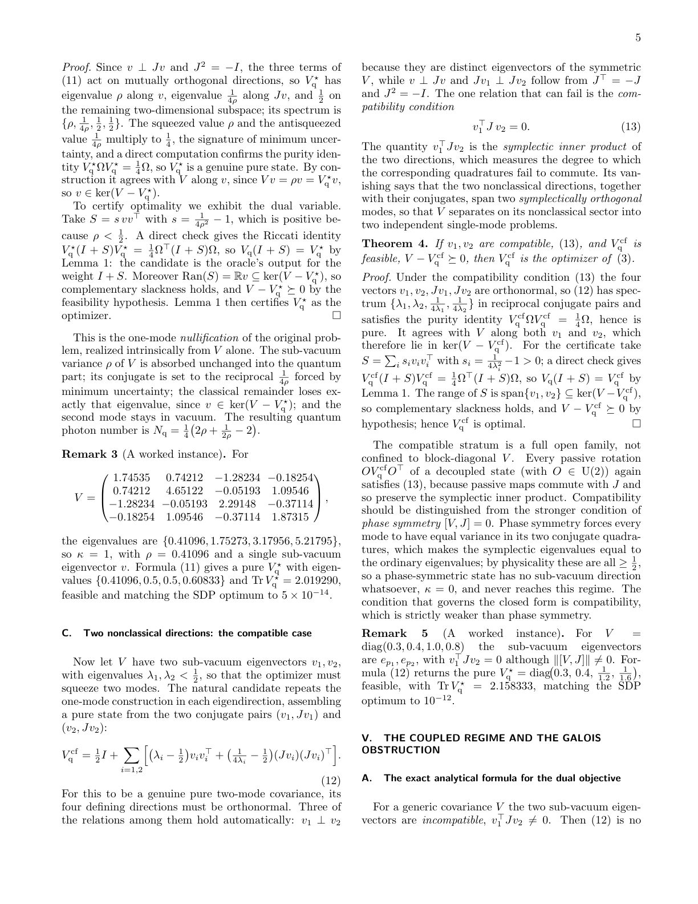
<figcaption class="paper-figure-caption"><b>Fig 4.</b> Low-resolution page preview, page 5</figcaption>
</figure>
<figure class="paper-figure-card">

<figcaption class="paper-figure-caption"><b>Fig 5.</b> Low-resolution page preview, page 6</figcaption>
</figure>
</div>

<p><strong>Summary.</strong> The paper rigorously analyzes the quantum-advantage resource of two-mode Gaussian light by solving a constrained convex optimization problem. It establishes that while simple cases yield closed forms, the generic case for coupled modes leads to an optimal value determined by the least real root of a degree-12 polynomial. This demonstrates a fundamental mathematical barrier to finding general analytical solutions in this quantum regime.</p>
<p><strong>Why it may be interesting.</strong> This work provides deep mathematical insight into resource quantification in continuous variable quantum optics, establishing rigorous boundaries on what can be solved analytically versus what requires numerical methods.</p>
<details>
<summary>Detailed structure</summary>
<p><strong>Main problem.</strong> The core problem is determining the 'quantum-advantage resource' of a mixed Gaussian state, which requires solving a complex convex optimization problem.</p>
<p><strong>Main result.</strong> For generic two-mode states with genuinely coupled modes, the optimal quantum-advantage resource cannot be expressed in terms of elementary functions or radicals due to an algebraic obstruction related to the Galois group $S_{12}$.</p>
<p><strong>Method.</strong> The authors use convex optimization techniques, formulating the problem as a semidefinite program (SDP) and solving it by reducing it to maximizing a dual concave cost function.</p>
<p><strong>Model / system.</strong> The system models multimode light described by its quadrature covariance matrix $V$. The focus is on the two-mode case ($M=2$), which represents the smallest regime exhibiting genuinely coupled modes.</p>
<p><strong>Key observables.</strong> Quantum-advantage resource, $N_q(V)$, defined as $rac{1}{2}(   ext{Tr} V_{\star q} - 2)$; the optimal covariance matrix $V_{\star q}$.</p>
<p><strong>Important parameters / regimes.</strong> The number of nonclassical directions ($\kappa$); compatibility between eigenvectors; and the structure of the polynomial whose root determines $N_q(V)$.</p>
<p><strong>Assumptions / limitations.</strong> The analysis relies on reducing the SDP to a dual problem, and closed-form solutions are only possible when the system falls into specific 'decoupled strata' where eigenvector compatibility holds.</p>
<p><strong>Figures summary.</strong> Not specified in the notes; the structure is built around deriving polynomial equations whose roots determine the resource value.</p>
<p><strong>Paper structure.</strong> The paper progresses by defining the optimization problem (primal/dual), establishing an oracle formula for the minimizer, analyzing specific low-$\kappa$ cases ($\kappa=0, 1$), and culminating in the general result that requires solving a degree-12 polynomial equation for coupled systems.</p>
</details>
<details>
<summary>Abstract</summary>
<p>We study the problem of extracting a quantum complexity resource from a mixed Gaussian state of the multimode light. We present the first complete, certificate-checked solution to this problem in a genuinely coupled sector. We carry this out for the two-mode case, the smallest case in which modes are genuinely coupled. Even in this case the solution is highly nontrivial, and we rigorously prove that it cannot be given in a closed form.</p>
</details>
<p><sub><a href="#top">↑ back to top</a></sub></p>

<p><a id="paper-2607.00210"></a></p>
<h3 id="classification-and-exact-local-masking-in-finite-field-clifford-dual-unitary-circuits"><a href="http://arxiv.org/abs/2607.00210v1">Classification and Exact Local Masking in Finite-Field Clifford Dual-Unitary Circuits</a></h3>
<p><strong>Authors:</strong> Basanta R Pahari<br>
<strong>Type:</strong> theory · <strong>Category:</strong> quantum information and computing · <strong>PDF:</strong> <a href="https://arxiv.org/pdf/2607.00210v1">https://arxiv.org/pdf/2607.00210v1</a><br>
<strong>Analysis basis:</strong> full PDF text, analyzed in chunks
<strong>Topic relevance:</strong> <code>entanglement &amp; information structure</code> <strong>2/5</strong></p>
<div class="figure-strip-hint">↔ Scroll figures horizontally</div>
<div class="paper-figures-scroll">
<figure class="paper-figure-card">
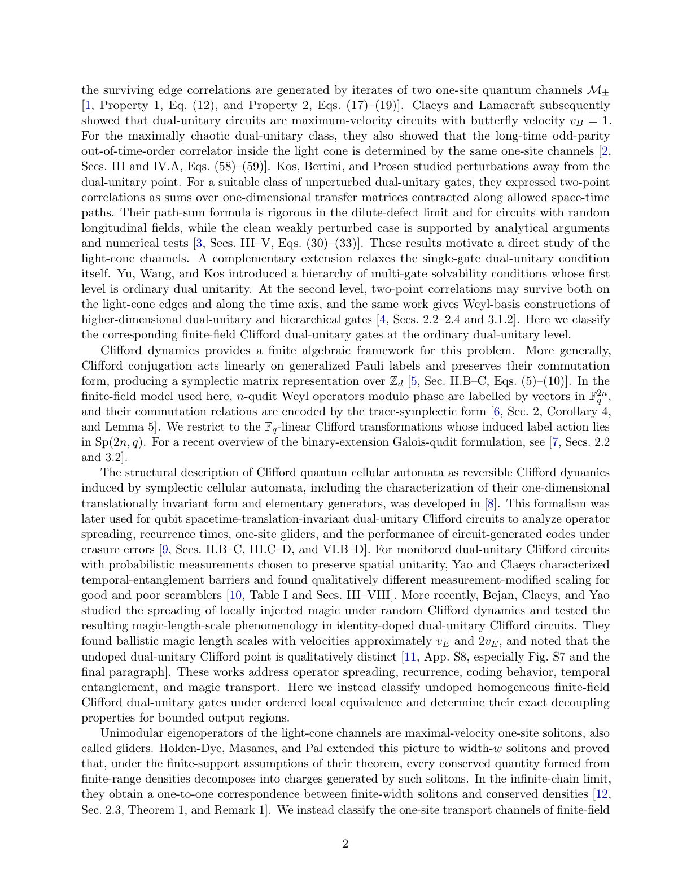
<figcaption class="paper-figure-caption"><b>Fig 1.</b> Low-resolution page preview, page 2</figcaption>
</figure>
<figure class="paper-figure-card">
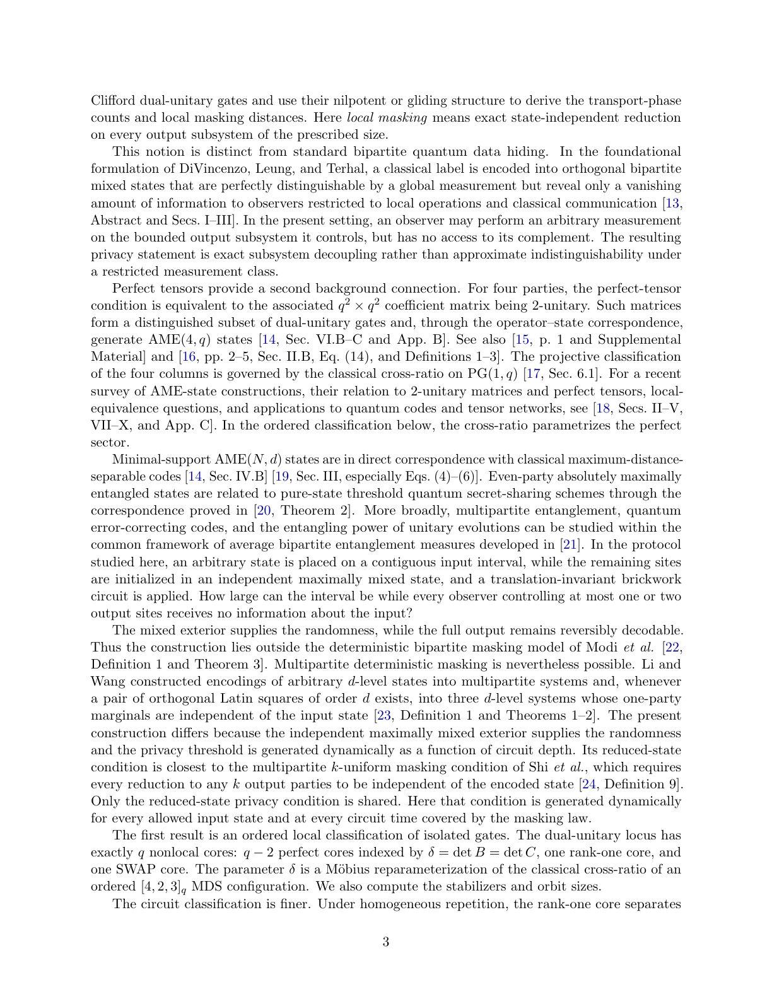
<figcaption class="paper-figure-caption"><b>Fig 2.</b> Low-resolution page preview, page 3</figcaption>
</figure>
<figure class="paper-figure-card">
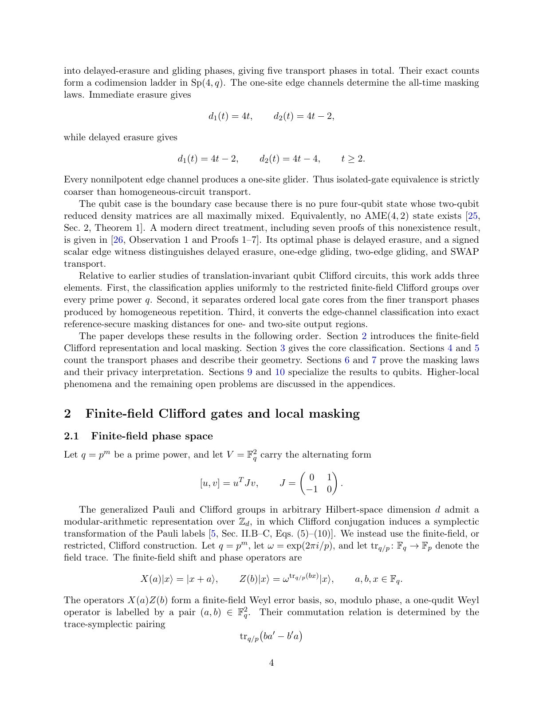
<figcaption class="paper-figure-caption"><b>Fig 3.</b> Low-resolution page preview, page 4</figcaption>
</figure>
<figure class="paper-figure-card">
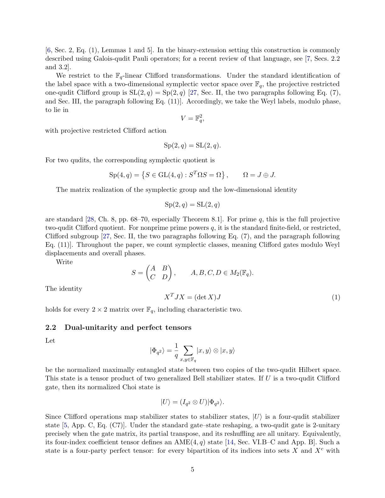
<figcaption class="paper-figure-caption"><b>Fig 4.</b> Low-resolution page preview, page 5</figcaption>
</figure>
<figure class="paper-figure-card">

<figcaption class="paper-figure-caption"><b>Fig 5.</b> Low-resolution page preview, page 6</figcaption>
</figure>
</div>

<p><strong>Summary.</strong> This theoretical paper classifies complex two-qudit gates within finite fields by analyzing their structure using symplectic groups. It establishes precise quantitative bounds on 'local masking'—the ability to hide input information from subsets of output qubits while retaining full recoverability. This has significant implications for designing secure quantum communication protocols.</p>
<p><strong>Why it may be interesting.</strong> This work provides rigorous mathematical tools (symplectic geometry, algebraic combinatorics) to quantify quantum information security primitives like data hiding and local observability in structured quantum computation models.</p>
<details>
<summary>Detailed structure</summary>
<p><strong>Main problem.</strong> The paper classifies two-qudit finite-field Clifford dual-unitary gates and applies this classification to determine exact local masking properties in homogeneous brickwork quantum circuits.</p>
<p><strong>Main result.</strong> It proves that sufficiently short quantum messages can be completely hidden from any one- or two-qudit output subsystem, even when the input is entangled, while remaining perfectly recoverable from the full output.</p>
<p><strong>Method.</strong> The analysis uses symplectic matrix representations over finite fields ($\mathbb{F}_q$) to classify gate loci and employs concepts like local masking distances derived from Weyl edge channels.</p>
<p><strong>Model / system.</strong> The model involves quantum circuits built using two-qudit gates defined over finite fields, specifically analyzing the structure of dual-unitary Clifford elements within $ ext{Sp}(4, q)$.</p>
<p><strong>Key observables.</strong> Local masking distances ($d_1(t), d_2(t)$); symplectic core types ($S_\delta$, $SR$, $SS$); and recovery fidelities.</p>
<p><strong>Important parameters / regimes.</strong> The finite field size $q$; circuit depth $t$; and the determinant parameter $\delta$.</p>
<p><strong>Assumptions / limitations.</strong> The analysis distinguishes between local gate equivalence and homogeneous circuit transport, and assumes specific boundary conditions for edge channel analysis.</p>
<p><strong>Figures summary.</strong> Tables summarize exact phase counts for different edge-transport phases within the dual-unitary symplectic classes; diagrams illustrate core structures related to cross-ratios.</p>
<p><strong>Paper structure.</strong> The paper proceeds by defining the finite-field Clifford representation, classifying dual-unitary gates and perfect tensors using symplectic invariants, developing the concept of masking distances via Weyl channels, and finally applying these results to derive specific local privacy guarantees.</p>
</details>
<details>
<summary>Abstract</summary>
<p>We classify two-qudit finite-field Clifford dual-unitary gates and apply the classification to exact local masking and operator transport in homogeneous brickwork circuits. Under ordered one-qudit Clifford equivalence, the dual-unitary locus contains $q-2$ perfect-tensor cores, one rank-one core, and one SWAP core. The perfect cores are indexed by \[ δ=\det B=\det C, \] and are related to the ordered cross-ratio $λ$ of the associated $[4,2,3]_q$ MDS configuration through \[ λ=\fracδ{δ-1}. \] Homogeneous repetition separates these cores into five transport phases whose algebraic codimensions in $\operatorname{Sp}(4,q)$ are $0,1,2,3,4$.   The one-site Weyl edge channels determine exact local-masking distances. Perfect-tensor circuits attain \[ d_1(t)=4t, \qquad d_2(t)=4t-2, \] whereas delayed erasers satisfy \[ d_1(t)=4t-2, \qquad d_2(t)=4t-4 \] for $t\geq 2$. Consequently, sufficiently short quantum messages are completely hidden from every one- or two-qudit output subsystem, even when the input is entangled with a reference, while remaining exactly recoverable from the full output.   For $q=3$, we construct an explicit perfect-tensor Clifford gate from two inverse SUM gates. Exhaustive Weyl-support searches for $t=1,2,3$ reproduce the predicted masking distances, and a one-period Choi-channel calculation for a four-qutrit periodic circuit gives numerical residual leakage below $2\times 10^{-16}$. Under the coherent perturbation considered here, local leakage is linear in the perturbation strength, whereas the infidelity of recovery using the ideal inverse is quadratic near the perfect point.</p>
</details>
<p><sub><a href="#top">↑ back to top</a></sub></p>

<p><a id="paper-2607.00184"></a></p>
<h3 id="a-universal-time-of-arrival-signature-of-bose-einstein-condensation"><a href="http://arxiv.org/abs/2607.00184v1">A universal time-of-arrival signature of Bose--Einstein condensation</a></h3>
<p><strong>Authors:</strong> Mathieu Beau, Timothey Szczepanski<br>
<strong>Type:</strong> theory · <strong>Category:</strong> quantum gases · <strong>PDF:</strong> <a href="https://arxiv.org/pdf/2607.00184v1">https://arxiv.org/pdf/2607.00184v1</a><br>
<strong>Analysis basis:</strong> full PDF text, analyzed in chunks
<strong>Topic relevance:</strong> <code>Keldysh / 2PI / non-Gaussian methods</code> <strong>1/5</strong> · <code>analog quantum simulation</code> <strong>1/5</strong> · <code>driven-dissipative phase transition</code> <strong>1/5</strong> · <code>non-equilibrium dynamics</code> <strong>1/5</strong> · <code>non-equilibrium universality</code> <strong>1/5</strong></p>
<div class="figure-strip-hint">↔ Scroll figures horizontally</div>
<div class="paper-figures-scroll">
<figure class="paper-figure-card">
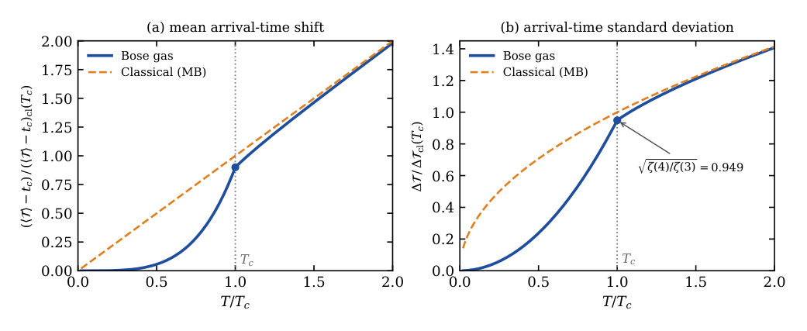
<figcaption class="paper-figure-caption"><b>Fig 1.</b> FIG. 1. Time-of-arrival statistics across the Bose–Einstein transition. (a) Mean arrival-time shift ⟨T ⟩−tc and (b) standard deviation ∆T , each normalized to its classical value at Tc, versus T/Tc. The dashed curves are the Maxwell–Boltzmann predictions, ⟨T ⟩cl −tc ∝T and ∆Tcl = g−1p</figcaption>
</figure>
<figure class="paper-figure-card">
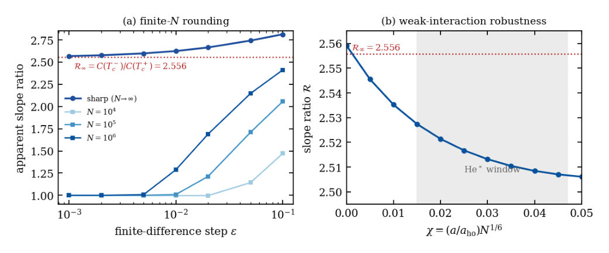
<figcaption class="paper-figure-caption"><b>Fig 2.</b> FIG. 2. Observability and robustness of the TOA cusp. (a) Apparent one-sided slope ratio at the transition versus finite- difference temperature step ε. The sharp thermodynamic-limit curve approaches the universal value R∞≃2.5556 (dotted line), equal to the trapped-gas specific-heat ratio. The finite-N curves are computed from the exact discrete-level sum for 4He (m = 6.64 × 10−27 kg) in a harmonic trap (ωx, ωy, ωz) = 2π × (1000, 1000, 100) Hz, with N = 104, 105, 106 (geometric-mean frequency ¯ω = 2π × 464 Hz, Tc = 0.45, 0.97, 2.10 µK respectively). At finite N, the transition is rounded over a window δT/Tc ∼N −1/3; if ε is pushed below this width, the finite difference samples the smoothed...</figcaption>
</figure>
<figure class="paper-figure-card">
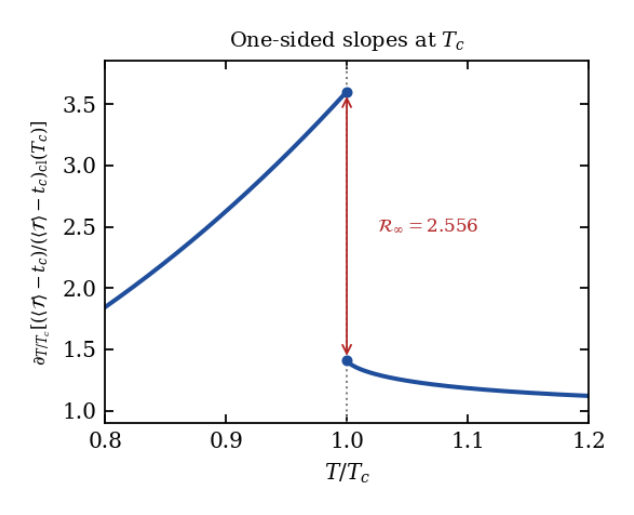
<figcaption class="paper-figure-caption"><b>Fig 3.</b> FIG. 3. One-sided slopes of the normalized mean arrival-time shift, ∂T/Tc  (⟨T ⟩−tc)/(⟨T ⟩−tc)cl(Tc)  , across the transition. The slope drops from 4 ζ(4)/ζ(3) ≃3.60 at T − c to R1 + TcR′(T + c ) ≃1.41 at T + c , a one-sided ratio R∞≃2.556 equal to the trapped-gas specific-heat ratio. The standard deviation ∆T shares the same ratio but a visually milder kink, being linear in σV rather than σ2 V .</figcaption>
</figure>
<figure class="paper-figure-card">

<figcaption class="paper-figure-caption"><b>Fig 4.</b> FIG. 4. Longitudinal velocity variance σ2 V (T) from the exact discrete-level sum [Eq. (56), open symbols] versus the semiclassical thermodynamic-limit form (solid), for 4He (m = 6.64 × 10−27 kg) in the harmonic trap (ωx, ωy, ωz) = 2π × (1000, 1000, 100) Hz (¯ω = 2π × 464 Hz), at N = 105 (Tc = 0.97 µK) and N = 106 (Tc = 2.10 µK). The two agree to &lt; 0.1% for T ≥Tc; the exact sum rounds the cusp over δT/Tc ∼N −1/3 and the below-Tc excess decreases with N.</figcaption>
</figure>
<figure class="paper-figure-card">

<figcaption class="paper-figure-caption"><b>Fig 5.</b> FIG. 5. Weak-interaction robustness from the HF–LDA calculation. The fractional shift of R stays at the percent level while Tc shifts several times more strongly.</figcaption>
</figure>
</div>

<p><strong>Summary.</strong> The authors show that Bose-Einstein condensation leaves a universal 'cusp' signature in the time-of-arrival distribution of released trapped atoms. This cusp is quantified by a ratio ($R_\infty$) predicted to match the specific heat ratio of the gas, providing a robust, measurable diagnostic tool for BEC dynamics.</p>
<p><strong>Why it may be interesting.</strong> This work provides a concrete, measurable dynamical signature of BEC that links time-domain measurements (TOA statistics) directly to fundamental thermodynamic quantities (specific heat ratios), offering an experimental test for many-body quantum phenomena in ultracold gases.</p>
<details>
<summary>Detailed structure</summary>
<p><strong>Main problem.</strong> To demonstrate that Bose-Einstein condensation (BEC) produces a universal, measurable signature—a cusp—in the time-of-arrival (TOA) statistics of a harmonically trapped gas released into free fall.</p>
<p><strong>Main result.</strong> The BEC transition imprints a universal slope ratio ($R_\infty \approx 2.556$) in the TOA statistics, which is predicted to equal the specific-heat ratio of the ideal trapped Bose gas.</p>
<p><strong>Method.</strong> Semiclassical analysis of the time-of-arrival distribution ($\Pi(t)$) in the long time-of-flight limit, analyzing how the mean arrival time and standard deviation exhibit non-analytic behavior at the critical temperature ($T_c$).</p>
<p><strong>Model / system.</strong> An ideal Bose gas confined in an anisotropic harmonic trap, analyzed after being released into free fall. The analysis is performed in the semiclassical far-field limit ($\epsilon \ll 1$).</p>
<p><strong>Key observables.</strong> Time-of-arrival distribution $\Pi(t)$, mean arrival time $\langle T 
angle$, standard deviation $\Delta T$, and the universal one-sided slope ratio $R_\infty$.</p>
<p><strong>Important parameters / regimes.</strong> Critical temperature ($T_c$), trap frequencies ($\omega$), initial velocity variance ($\sigma_V^2$), and the small parameter $\epsilon = \sigma_V / \sqrt{2gH}$.</p>
<p><strong>Assumptions / limitations.</strong> The analysis relies on the ideal gas limit, the thermodynamic limit ($N 	o \infty$), and the semiclassical far-field approximation. Weak interactions are tested but found to perturb the ratio only weakly.</p>
<p><strong>Figures summary.</strong> Figures illustrate the temperature dependence of $\langle T 
angle - t_c$ and $\Delta T$, showing a clear cusp at $T=T_c$. Later figures confirm that finite atom number rounds this cusp, while weak interactions cause much smaller shifts in the ratio itself.</p>
<p><strong>Paper structure.</strong> The paper develops the TOA distribution semiclassically, derives model-independent relations connecting moments ($\langle T 
angle$ and $\Delta T$), calculates the universal slope ratio $R_\infty$, and finally tests this prediction's robustness against finite atom numbers and weak repulsive interactions.</p>
</details>
<details>
<summary>Abstract</summary>
<p>We show that Bose--Einstein condensation produces a cusp in the time-of-arrival (TOA) statistics of a harmonically trapped gas released into free fall. In the semiclassical long time-of-flight regime, with $ε=σ_V/\sqrt{2gH}\ll1$, both the mean and standard deviation of the arrival time distribution, which are governed by the longitudinal velocity variance, remain continuous, but acquire a cusp whose one-sided slope ratio is universal within the ideal-gas far-field limit, $\mathcal{R}_\infty=2.5556\ldots$, and equals the trapped-gas specific-heat ratio $C(Tc^-)/C(Tc^+)$. Finite atom number rounds the cusp and weak interactions perturb it only weakly, leaving a measurable time-domain signature of condensation.</p>
</details>
<p><sub><a href="#top">↑ back to top</a></sub></p>

<p><a id="paper-2607.00786"></a></p>
<h3 id="bias-preserving-gates-and-quantum-error-correction-with-dual-rail-cat-codes"><a href="http://arxiv.org/abs/2607.00786v1">Bias-Preserving Gates and Quantum Error Correction With Dual-Rail Cat Codes</a></h3>
<p><strong>Authors:</strong> Debjyoti Biswas, Nikhil Sharma, Alberto Salvador, Rui Wang, Mats Granath, Adithi Udupa, Giulia Ferrini<br>
<strong>Type:</strong> theory · <strong>Category:</strong> quantum information and computing · <strong>PDF:</strong> <a href="https://arxiv.org/pdf/2607.00786v1">https://arxiv.org/pdf/2607.00786v1</a><br>
<strong>Analysis basis:</strong> full PDF text, analyzed in chunks
<strong>Topic relevance:</strong> <code>correlated / nonlocal dissipation</code> <strong>1/5</strong> · <code>correlated cavity matter</code> <strong>1/5</strong> · <code>driven-dissipative phase transition</code> <strong>1/5</strong> · <code>methods for driven-dissipative</code> <strong>1/5</strong></p>
<div class="figure-strip-hint">↔ Scroll figures horizontally</div>
<div class="paper-figures-scroll">
<figure class="paper-figure-card">

<figcaption class="paper-figure-caption"><b>Fig 1.</b> FIG. 1: Wigner function of the even and odd cat states yielding the dual-rail cat code with N = 1 (DRCC-1). The logical basis states are |¯0⟩= |C+⟩|C−⟩(Eq.(10)) and |¯1⟩= |C−⟩|C+⟩(Eq.(11)).</figcaption>
</figure>
<figure class="paper-figure-card">

<figcaption class="paper-figure-caption"><b>Fig 2.</b> FIG. 2: For DRCC-1 (upper panel), any single-photon loss or gain, as well as arbitrary higher-order photon-loss errors ˆam i or photon-gain errors ˆa†m i on a single mode (m ≥2), either map the logical states to the even-parity leakage subspace or leave them within the odd-parity code space. For the conventional dual-rail code (lower panel), while single-photon loss or gain on either mode map the logical states to the even-parity leakage states {|00⟩, |11⟩, |02⟩, |20⟩} (detectable as erasures), higher-order photon gain processes ˆa†m i (m ≥2) can also populate other odd-parity states, such as {|12⟩, |21⟩}, leading to false-positive syndrome outcomes [20].</figcaption>
</figure>
<figure class="paper-figure-card">

<figcaption class="paper-figure-caption"><b>Fig 3.</b> FIG. 3: Schematics for syndrome measurement and error correction with two-qubit repetition code with DRCC-1. For the syndrome measurement, we use a two-level system as an auxiliary qubit. Note that the JPC operation does not introduce entanglement between the auxiliary two-level system and the DRCC-1.</figcaption>
</figure>
<figure class="paper-figure-card">

<figcaption class="paper-figure-caption"><b>Fig 4.</b> FIG. 4: Syndrome measurement scheme with the three-qubit repetition code with an inner DRCC-1.</figcaption>
</figure>
<figure class="paper-figure-card">

<figcaption class="paper-figure-caption"><b>Fig 5.</b> Fig. 5 shows the dependence of plogical on α and the noise strength.</figcaption>
</figure>
</div>

<p><strong>Summary.</strong> The paper introduces the Dual-Rail Cat Code (DRCC), a concatenated bosonic error-correcting code designed for fault-tolerant quantum computing. It demonstrates that DRCC can support universal, bias-preserving logical gates using only beam-splitter interactions. Furthermore, it develops robust protocols by combining DRCC with outer repetition codes to deterministically correct photon loss errors.</p>
<p><strong>Why it may be interesting.</strong> This work directly addresses key challenges in photonic quantum computation—namely, achieving high fidelity gates while managing realistic hardware errors like photon loss and decoherence—by proposing a novel code structure.</p>
<details>
<summary>Detailed structure</summary>
<p><strong>Main problem.</strong> Developing fault-tolerant quantum computation protocols that can simultaneously support universal logical operations, suppress hardware noise, and efficiently handle photon-loss errors.</p>
<p><strong>Main result.</strong> The proposed Dual-Rail Cat Code (DRCC) offers a robust bosonic encoding that preserves erasure bias during gate operations and allows for deterministic single-photon loss correction via concatenation with outer repetition codes.</p>
<p><strong>Method.</strong> Theoretical analysis involving the construction of logical gates using beam-splitter interactions, analyzing error propagation using the Knill–Laflamme condition, and deriving stabilization mechanisms via engineered dissipation (Lindblad master equations).</p>
<p><strong>Model / system.</strong> The system utilizes bosonic encodings, specifically the DRCC, which is a concatenated structure combining an inner cat code with an outer dual-rail structure. Operations are modeled using cavity modes ($\hat{a}_i$) and governed by Hamiltonians or dissipators.</p>
<p><strong>Key observables.</strong> Logical error rates (X, Y, Z), relative geometric phases, success probability of QEC protocols, and expectation values of number operators ($\langle \hat{n} 
angle$).</p>
<p><strong>Important parameters / regimes.</strong> Photon loss rate ($\kappa$), dephasing rate ($\gamma$), cat state parameter ($\alpha$), and the concatenation level (e.g., two-qubit or three-qubit repetition code).</p>
<p><strong>Assumptions / limitations.</strong> The analysis often relies on approximations such as the small-$\alpha$ limit for dephasing noise or the large-$\alpha$ limit for photon loss, and assumes specific dissipation mechanisms are active for stabilization.</p>
<p><strong>Figures summary.</strong> Figures illustrate schematics of syndrome measurement using joint parity checks ($\hat{U}_{JPC}$) and show the structure of QEC protocols involving outer repetition codes concatenated with DRCC-1.</p>
<p><strong>Paper structure.</strong> The paper progresses from introducing the limitations of individual bosonic codes to proposing the DRCC. It then details gate construction via beam-splitters, analyzes error correction under various noise models (photon loss/dephasing), and concludes by outlining advanced QEC protocols using outer repetition codes for robust fault tolerance.</p>
</details>
<details>
<summary>Abstract</summary>
<p>Scalable fault-tolerant quantum computation requires quantum error-correcting codes that simultaneously support universal logical operations, suppress hardware-specific noise, and enable efficient handling of photon-loss errors. Bosonic encodings such as the dual-rail and cat codes each offer attractive features but also exhibit important limitations when used in isolation. The dual-rail code enables efficient single-photon-loss detection by converting leakage out of the computational subspace induced by photon-loss errors into an erasure error. In contrast, the cat code provides a resource-efficient, bias-tailored error-correction scheme with bias-preserving logical gate operations. Here, we introduce the dual-rail cat code (DRCC), a concatenated bosonic encoding that combines an inner cat code with an outer dual-rail structure, thereby inheriting and enhancing the advantages of both constituent codes. We analyse the error-correction properties of the DRCC and propose a deterministic single-photon-loss correction protocol by concatenating it with an outer repetition code. Exploiting the code's intrinsic noise bias, we construct a universal set of logical gates using only beam-splitter interactions and demonstrate that all logical operations preserve the erasure-biased noise structure. The DRCC offers several distinctive advantages, including the absence of relative geometric phases during gate operations, deterministic erasure detection and correction, and simultaneous syndrome extraction without interrupting stabilisation. These features make the DRCC a promising bosonic code for hardware-efficient, bias-preserving, and erasure-resilient fault-tolerant quantum computation.</p>
</details>
<p><sub><a href="#top">↑ back to top</a></sub></p>

<p><a id="paper-2607.00102"></a></p>
<h3 id="a-differential-derivation-of-the-obara-saika-relation-for-gaussian-electron-repulsion-integrals"><a href="http://arxiv.org/abs/2607.00102v1">A differential derivation of the Obara-Saika relation for Gaussian electron repulsion integrals</a></h3>
<p><strong>Authors:</strong> Charles C. Forgy, David A. Mazziotti<br>
<strong>Type:</strong> theory · <strong>Category:</strong> other · <strong>PDF:</strong> <a href="https://arxiv.org/pdf/2607.00102v1">https://arxiv.org/pdf/2607.00102v1</a><br>
<strong>Analysis basis:</strong> full PDF text, analyzed in chunks
<strong>Topic relevance:</strong> <code>analog quantum simulation</code> <strong>1/5</strong> · <code>methods for driven-dissipative</code> <strong>1/5</strong> · <code>non-equilibrium dynamics</code> <strong>1/5</strong></p>
<div class="figure-strip-hint">↔ Scroll figures horizontally</div>
<div class="paper-figures-scroll">
<figure class="paper-figure-card">

<figcaption class="paper-figure-caption"><b>Fig 1.</b> Low-resolution page preview, page 2</figcaption>
</figure>
<figure class="paper-figure-card">
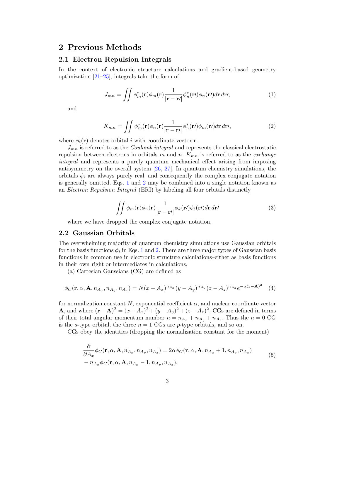
<figcaption class="paper-figure-caption"><b>Fig 2.</b> Low-resolution page preview, page 3</figcaption>
</figure>
<figure class="paper-figure-card">
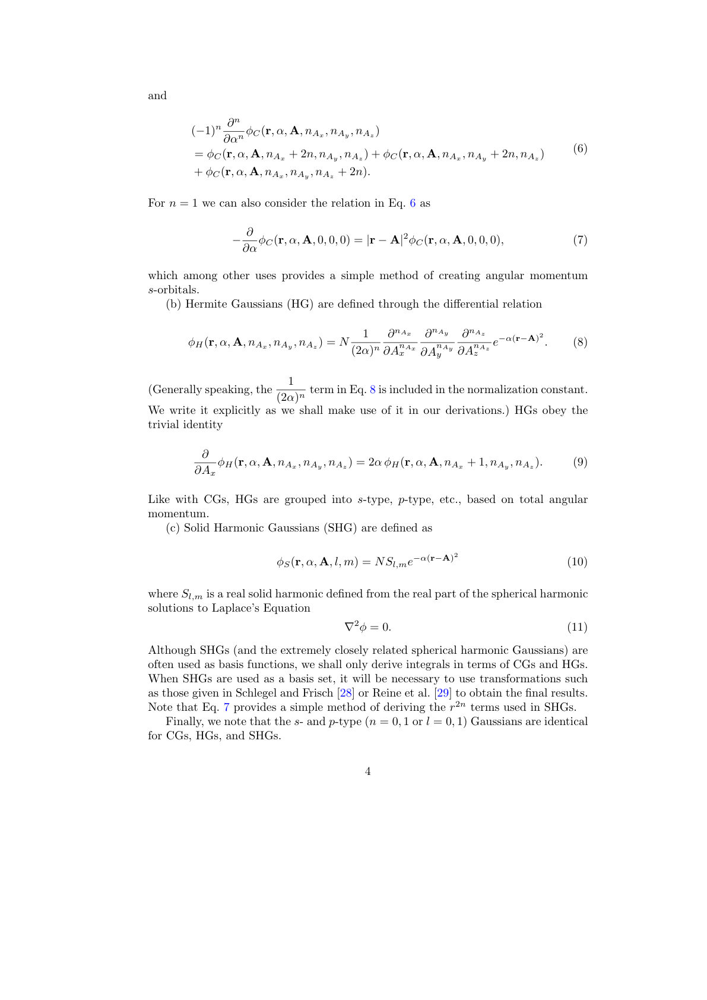
<figcaption class="paper-figure-caption"><b>Fig 3.</b> Low-resolution page preview, page 4</figcaption>
</figure>
<figure class="paper-figure-card">
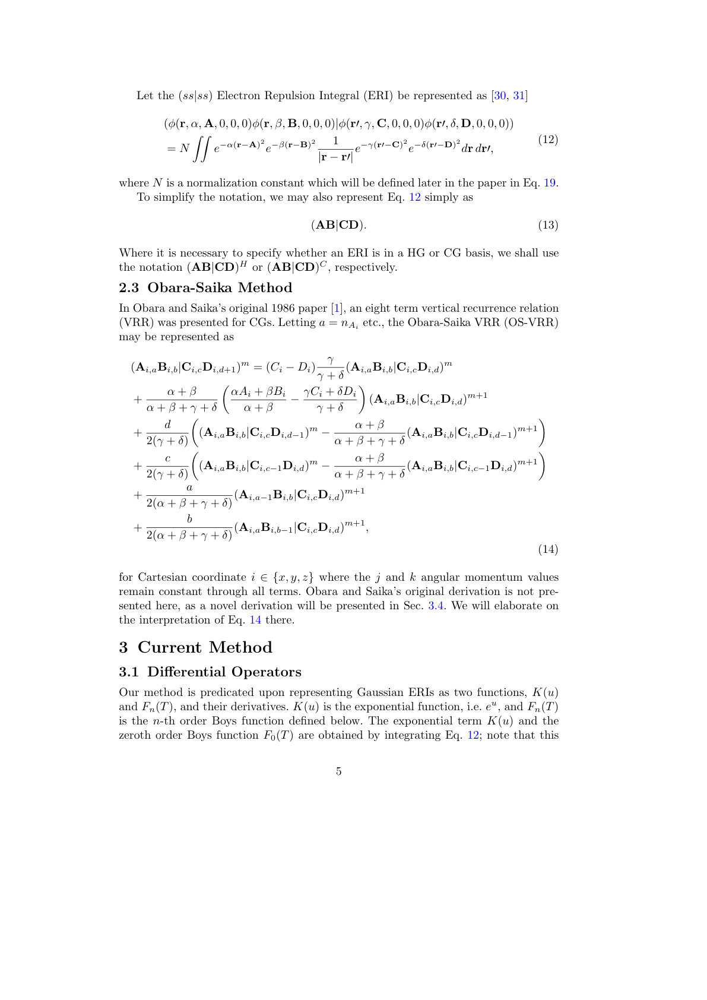
<figcaption class="paper-figure-caption"><b>Fig 4.</b> Low-resolution page preview, page 5</figcaption>
</figure>
<figure class="paper-figure-card">

<figcaption class="paper-figure-caption"><b>Fig 5.</b> Low-resolution page preview, page 6</figcaption>
</figure>
</div>

<p><strong>Summary.</strong> This paper provides a novel, purely differential derivation of the Obara-Saika recurrence relation used to calculate electron repulsion integrals. By deriving these relations from fundamental properties of Gaussian basis functions, the authors create a hierarchical formulation that exposes independent primitive terms. This structure is particularly valuable for developing highly parallelized code implementations on modern GPU architectures.</p>
<p><strong>Why it may be interesting.</strong> While focused on quantum chemistry integrals rather than AMO systems directly, the rigorous development of derivative-based computational schemes with a focus on GPU parallelization is highly relevant to developing efficient numerical solvers for complex many-body Hamiltonians encountered in AMO physics.</p>
<details>
<summary>Detailed structure</summary>
<p><strong>Main problem.</strong> The core problem is developing a computationally efficient method for evaluating complex two-center four-orbital Electron Repulsion Integrals (ERIs) required in quantum chemistry calculations.</p>
<p><strong>Main result.</strong> The authors present a novel, rigorous derivation of the Obara-Saika recurrence relation based purely on differential relations between Gaussian basis functions, confirming its algebraic equivalence to established methods.</p>
<p><strong>Method.</strong> The method involves applying repeated partial differentiation to unnormalized integrals and exploiting the structure of the resulting expressions to derive hierarchical recurrence relations for the ERIs.</p>
<p><strong>Model / system.</strong> The calculations are performed within the framework of electronic structure theory using Gaussian basis sets (Cartesian, Hermite, Spherical Harmonics Gaussians) to represent molecular orbitals.</p>
<p><strong>Key observables.</strong> Electron Repulsion Integrals (ERIs), specifically Coulomb and Exchange integrals ($J_{mn}, K_{mn}$), and the resulting recurrence relations (e.g., the vertical recurrence relation).</p>
<p><strong>Important parameters / regimes.</strong> The angular momentum components of the basis functions, and the quadratic nature of the integration arguments $T$ and $u$.</p>
<p><strong>Assumptions / limitations.</strong> The derivation assumes that exploiting differential structures allows for a systematic identification of independent primitive derivative quantities, which is crucial for parallelization.</p>
<p><strong>Figures summary.</strong> Not specified by the notes; the focus is on deriving and comparing algebraic relations (Eqs. 14, 20, 45, 46).</p>
<p><strong>Paper structure.</strong> The paper builds from defining the ERI in terms of Gaussian basis functions, developing recurrence relations for auxiliary Boys functions via differentiation, and culminating in the differential derivation that yields the final OS vertical recurrence relation.</p>
</details>
<details>
<summary>Abstract</summary>
<p>The Obara-Saika (OS) method is one of the most widely used techniques in quantum chemistry for evaluating electron repulsion integrals (ERIs) via a set of recurrence relations that build higher angular momentum integrals from lower-order ones. The original derivation by Obara and Saika proceeded by directly relating integrals of differing angular momentum. In this work, we present a compact novel derivation of the OS vertical recurrence relation based solely on differential relations between Gaussian basis functions, expanding on a method suggested in earlier work. By explicitly deriving the required derivative expressions we identify all non-zero primitive terms contributing to the full ERI to develop a hierarchical formulation of the OS recursion relations. This approach has pedagogical value as a rigorous and self-contained derivation. Additionally, the resulting organization exposes independent primitive derivative quantities and may be useful for code generation and parallel implementations on modern GPU architectures.</p>
</details>
<p><sub><a href="#top">↑ back to top</a></sub></p>

<p><a id="paper-2607.01052"></a></p>
<h3 id="breathing-mode-inducing-dynamical-pairing-in-kagome-materials"><a href="http://arxiv.org/abs/2607.01052v1">Breathing mode inducing dynamical pairing in Kagome materials</a></h3>
<p><strong>Authors:</strong> Debmalya Chakraborty, Anushree Datta, Jorge Cayao<br>
<strong>Type:</strong> theory · <strong>Category:</strong> strongly correlated electrons · <strong>PDF:</strong> <a href="https://arxiv.org/pdf/2607.01052v1">https://arxiv.org/pdf/2607.01052v1</a><br>
<strong>Analysis basis:</strong> full PDF text, analyzed in chunks
<strong>Topic relevance:</strong> <code>Keldysh / 2PI / non-Gaussian methods</code> <strong>1/5</strong> · <code>analog quantum simulation</code> <strong>1/5</strong> · <code>driven-dissipative phase transition</code> <strong>1/5</strong></p>
<div class="figure-strip-hint">↔ Scroll figures horizontally</div>
<div class="paper-figures-scroll">
<figure class="paper-figure-card">
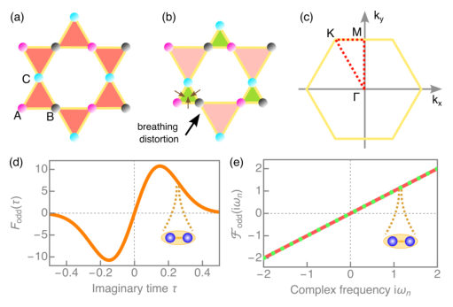
<figcaption class="paper-figure-caption"><b>Fig 1.</b> FIG. 1. (a) Sketch of a pristine regular kagome lattice (yellow) made of corner-sharing triangles with sublattices A, B and C. (b) Kagome lattice under a breathing distortion (brown ar- rows), which originates the breathing mode. (c) First Bril- louin zone of the kagome lattice indicating the high sym- metry points and the path KΓMK (red dashed lines). (d,e) Schematic pair amplitude induced by the breathing mode as a function of the imaginary time τ (d) and complex frequency in iωn (e). The resulting dynamical pair at finite times and frequencies is depicted by the blueish filled circles inside the orange ellipse.</figcaption>
</figure>
<figure class="paper-figure-card">
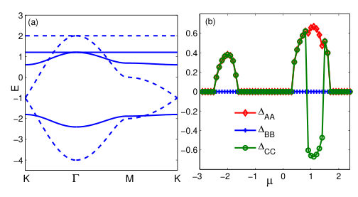
<figcaption class="paper-figure-caption"><b>Fig 2.</b> FIG. 2. (a) Energy bands of the normal state Hamiltonian Eq. (2) for tb = ta (dashes lines) and tb = 0.2ta (solid lines) with µ = 0. (b) Self-consistent values of the superconducting order parameters ∆AA,BB,CC with varying µ for tb = 0.2ta.</figcaption>
</figure>
<figure class="paper-figure-card">

<figcaption class="paper-figure-caption"><b>Fig 3.</b> FIG. 3. (a-c) Spectral function, ESEE and OSEO pair am- plitudes as functions of frequency along high-symmetry paths under a finite breathing distortion ta ̸= tb. The spectral func- tion is plotted versus ω, with z →ω + iη, while the pair amplitudes is shown for z. (d-f) The same as in (a-c) but as a function of momenta at ω = 1 for the spectral function, while z = 1 for the pair amplitudes. Parameters: ∆AA = 0.66|µ|, ∆BB = 0, ∆CC = −0.66|µ|, µ = 1, tb = 0.2ta when not speci- fied.</figcaption>
</figure>
</div>

<p><strong>Summary.</strong> This work theoretically investigates how a breathing mode structural distortion in Kagome materials can stabilize exotic superconducting phases. The authors classify possible pair symmetries and demonstrate that this specific distortion induces odd-frequency, dynamical Cooper pairs. This finding provides a mechanism for designing unconventional superconductivity using lattice engineering.</p>
<p><strong>Why it may be interesting.</strong> While focused on condensed matter, the concept of dynamical pairing driven by structural modulation and its connection to unconventional superconductivity has parallels with engineered quantum systems where lattice vibrations or external fields induce novel many-body states.</p>
<details>
<summary>Detailed structure</summary>
<p><strong>Main problem.</strong> To classify superconducting symmetries in Kagome superconductors and demonstrate the emergence of odd-frequency dynamical Cooper pairs driven by structural distortions.</p>
<p><strong>Main result.</strong> The breathing mode induces odd-frequency spin-singlet Cooper pairs, which are entirely dependent on the structural distortion breaking inversion symmetry.</p>
<p><strong>Method.</strong> Full classification of superconducting symmetries using anomalous Green's function symmetry analysis and self-consistent solution of the Bogoliubov de Gennes Hamiltonian.</p>
<p><strong>Model / system.</strong> The system is Kagome materials studied under a 'breathing mode' structural distortion ($t_a 
eq t_b$). The superconductivity is modeled using an onsite spin-singlet pairing approach within the Nambu Green's function formalism.</p>
<p><strong>Key observables.</strong> Superconducting pair amplitudes, symmetry classes (e.g., OSEO), and gap opening in band structures.</p>
<p><strong>Important parameters / regimes.</strong> The structural distortion parameter ($t_a 
eq t_b$), chemical potential ($\mu$), and frequency/momentum dependence of pairing functions.</p>
<p><strong>Assumptions / limitations.</strong> The analysis assumes onsite spin-singlet superconductivity, though the resulting odd-frequency pairs imply sublattice symmetry breaking is key.</p>
<p><strong>Figures summary.</strong> Figure 1 shows pair amplitude dependence on imaginary time; Figure 2 compares band structures with and without distortion (showing gap opening); Figure 3 illustrates spectral function and OSEO pair amplitudes vs. frequency/momentum.</p>
<p><strong>Paper structure.</strong> The paper first classifies all possible superconducting symmetries in the Kagome lattice, then analyzes how the breathing mode breaks inversion symmetry to stabilize a specific odd-frequency pairing state ($E^{(2)}_2$), which is shown to be non-local in time.</p>
</details>
<details>
<summary>Abstract</summary>
<p>The breathing mode in Kagome materials is a structural modulation that breaks inversion symmetry and has been shown to be a crucial source for intriguing phases in the normal state. In this work, we carry out a full classification of superconducting symmetries in kagome superconductors and demonstrate the emergence of odd-frequency dynamical Cooper pairs entirely driven by the breathing mode. We then show that odd-frequency spin-singlet Cooper pairs can be realized by controlling the breathing mode in kagome lattices with conventional spin-singlet $s$-wave superconductivity. Since odd-frequency pairing is intrinsically nonlocal in time, our results put forward the breathing mode for designing dynamical Cooper pairs in kagome materials.</p>
</details>
<p><sub><a href="#top">↑ back to top</a></sub></p>
<hr>
<p>
<a href="index.html">← Index</a>
 · <a href="papers_03.html">← Previous</a> · <a href="papers_05.html">Next →</a>
</p>
<hr>

</body>
</html>
